全部节目
-
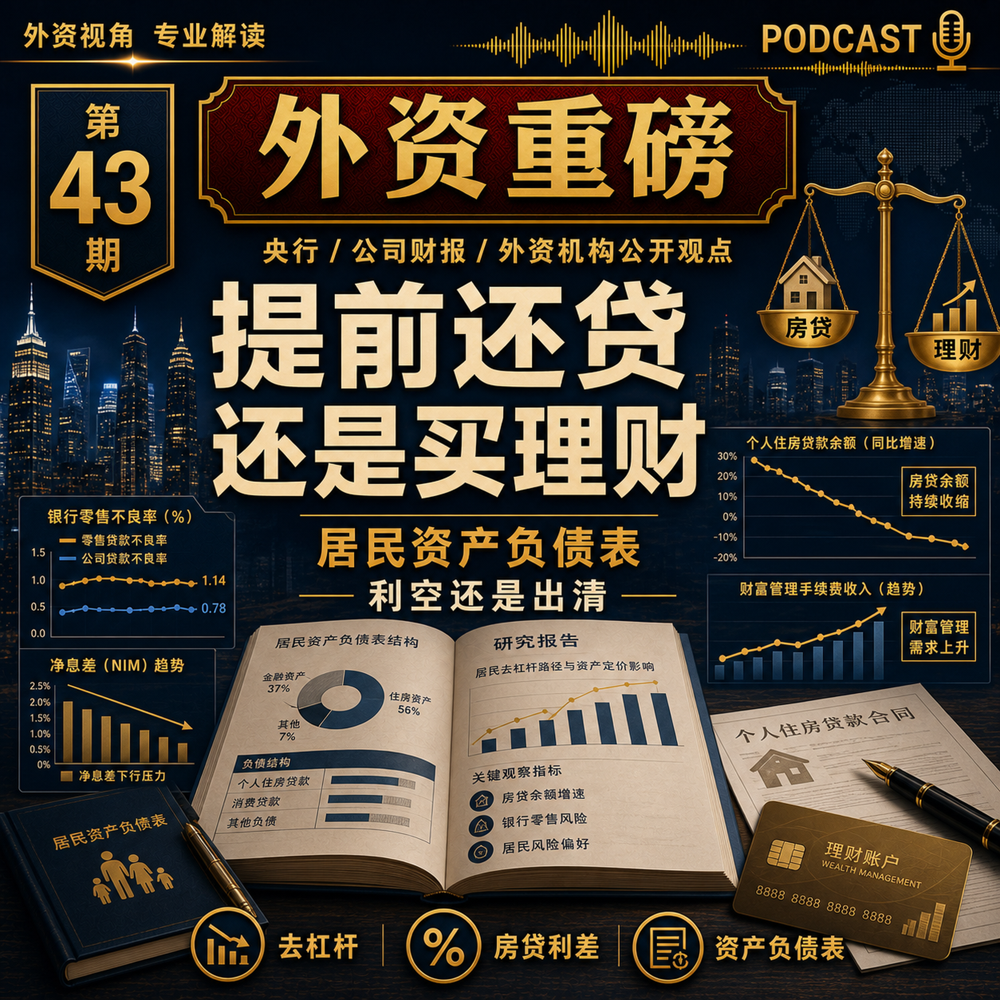
外资重磅第43期｜提前还贷还是买理财：外资在重算中国居民的资产负债表
如果你手里有一笔闲钱，是提前还房贷，还是继续买理财、买基金、留在存款里？这不是一道普通家庭理财题——把无数个家庭的选择加起来，就是中国居民资产负债表的方向，外资现在看中国银行、地产服务、消费和财富管理，都绕不开这张表。这期换一个入口，从普通家庭的钱袋子出发，主问题是：当一个家庭从『提前还贷』变成『重新算钱该放哪』，这个变化会怎样传导到银行、地产服务和中国资产的定价？提前还贷热的根源是房贷利率和理财收益率倒挂：房贷在百分之五以上时，提前还贷等于换掉一笔高成本负债。但二零二四年十月存量房贷集中重定价、到二零二六年六月五年期以上 LPR 降到百分之三点五后，这道题从『几乎不用想』变回『要重新算账』。不过央行数据显示一季度末个人住房贷款余额约三十六点七二万亿元、同比下降百分之三点一，房贷仍是收缩项——一个家庭提前还贷是个人选择，很多家庭一起就是宏观资产负债表变化。居民去杠杆是硬币两面：坏的一面是按揭资产减少、净息差压缩、资产负债表衰退风险（日本剧本）；好的一面是负债成本降下来、现金流变松后才有可能重新加风险偏好。关键分水岭是房价预期、收入预期、房贷余额能不能企稳。外资看这件事落到哪些资产：银行是直接承压方，招商银行一季度净息差同比降八个基点、零售不良率高于对公，但财富管理手续费同比增约百分之二十五——关键是零售信贷变薄后财富管理能不能补上；平安银行走『效益优先、兼顾规模』的主动调结构。地产服务看贝壳，一季度总交易额同比降约百分之十五点六、但净利同比增约百分之四十七，反映的是存量房时代平台能不能靠效率而非交易高景气赚钱。风险要讲透：资产负债表衰退长期化、房价负反馈、银行零售风险抬升、低利率不自动带来风险偏好、替代收入未必补得够快。三个观察信号：个人住房贷款余额、银行零售不良率与净息差、地产服务平台交易量与利润率能否同时稳住。结论不是居民去杠杆结束了，而是房贷已被重定价、居民还在修负债表，部分资产落点开始从规模逻辑转向效率逻辑。本节目仅作宏观观察和研报解读，不构成任何投资建议。
⏱ 15:47 -
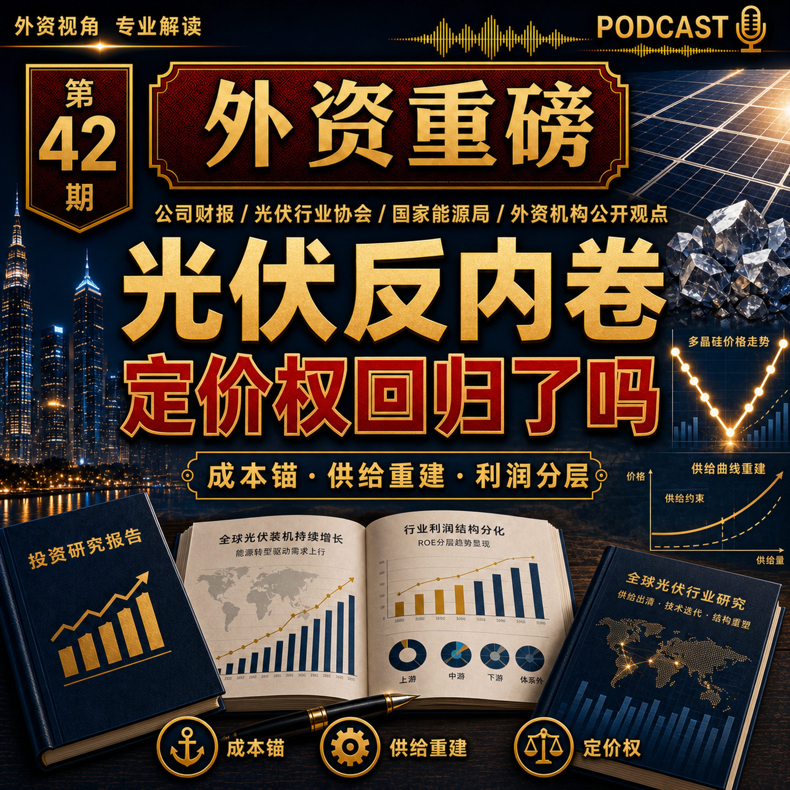
外资重磅第42期｜光伏反内卷：外资在重新定价活下来的产能
二零二五年，中国光伏龙头集体巨亏：隆基绿能全年归母净利润亏损约六十四亿元、连续第二年巨亏，通威股份亏损约九十五亿元，连重仓隆基的高瓴都清仓了。可另一边，截至二零二六年五月底全国太阳能发电装机已达约十二点六亿千瓦、同比增长百分之十六点三——需求还在，企业还亏，这才是光伏最值得讲的矛盾。所以这期主线只有一条：光伏的定价权怎么失效，又能不能被重新建立？外资重新评估的不是谁规模最大，而是谁能在定价权回归之前活下来。价格体系失效的本质，不是普通周期下行，而是成本锚被击穿。多晶硅是全链条利润中枢：硅料紧缺时是利润分配器，过剩时就变成亏损放大器。二零二一到二二年硅料从每吨约六万元涨到三四十万元，上游吃掉全行业利润；高价刺激扩产后，二三到二五年价格回落到每吨四到十万元，但折旧、能源、债务这些刚性成本不会同步下降，利润分配器就变成了成本绞肉机，行业陷入越卖越亏的死亡循环。反内卷不是简单涨价，而是用行业自律、质量标准、价格监管、兼并重组和产能约束，把塌掉的供给曲线重新扶起来——一次非市场定价实验。但价格回升不等于盈利恢复：多晶硅 N 型料一度从每吨三点五四万元回升超过百分之五十，二零二六年一季度又回落近四分之一，通威、隆基一季度仍分别亏约二十四亿、十九亿元，因为库存、折旧、减值让利润修复滞后。外资把光伏资产分成三层重估：现金生存型（通威、隆基），核心不是当期利润而是现金续航期，看能不能撑到落后产能退出；技术重估型（隆基押注的 BC 电池，也就是把电极放到背面提效率的路线），核心是有没有溢价权——客户愿不愿多付钱、订单能不能进财报、毛利能不能拉开差距；体系外定价型（阳光电源，靠逆变器和储能赚系统位置的钱，二零二五年净利约一百三十五亿元与主链巨亏形成鲜明对比）。统一落到三个指标：价格是否自稳定（报价能不能变成交价、离开政策预期还不塌）、产能是否真实出清（落后产线有没有停、还在不在亏现金抢单）、利润是否结构分化（强者先恢复、弱者继续退出）。结论不是反内卷带来反转，而是定价权没回来价格反弹只是波动，定价权回来光伏才重新变成可投资、可分层的产业。本节目仅作宏观观察和研报解读，不构成任何投资建议。
⏱ 14:46 -
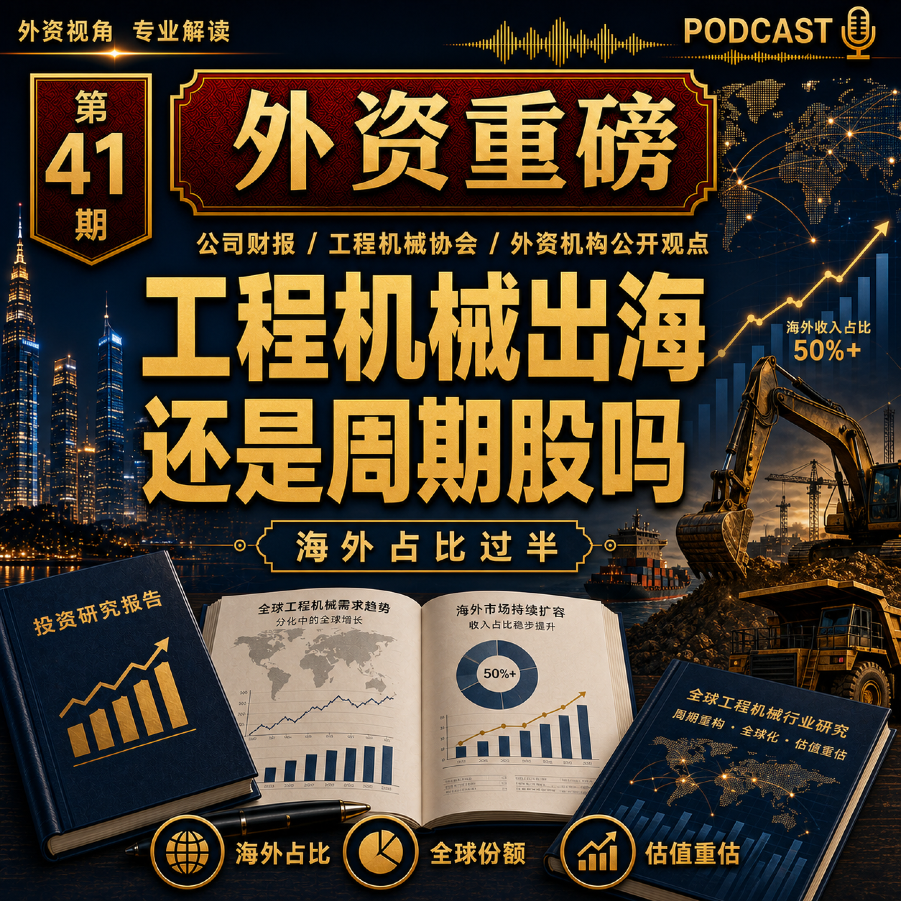
外资重磅第41期｜三一、徐工：工程机械出海是不是被外资重新定价
一台挖掘机，如果还只用『国内地产周期』给它估值，可能已经开始算错账了。同一台中国产机器，一部分还在国内工地，另一部分已经开到印尼矿山、非洲能源、中东基建和拉美矿区。三一重工海外收入长期超过六成，中联重科一季度境外占比超过五成半，徐工二零二五年境外收入接近一半，潍柴国外收入也超过总营收一半。所以这期真正要问的不是工程机械有没有复苏，而是：当一家中国制造公司大部分增量来自海外，外资给它估值，还该用『中国周期股』的尺子，还是该换成『全球工业品公司』的尺子？先把口径摆清：工程机械协会数据显示二零二六年一到五月挖掘机总销量约十二万六千九百台、同比增长约百分之二十五，其中出口约五万八千七百台、同比增长约百分之三十三，出口增速接近国内两倍——复苏不能只用国内地产链解释。这带来一个认知反转：它越来越像全球矿山设备里的中国版卡特彼勒，但没有因为出海就变成无周期资产，只是从单一国内周期，变成国内加海外矿山、能源、基建周期的叠加。两把尺子的差别在于：中国周期股看国内开工小时数、天然保守；全球工业品公司看全球份额、渠道、售后网络和现金流稳定性，对标的是卡特彼勒、小松。外资真正在算的不是挖机卖了多少台，而是这些台数背后能不能沉淀成更稳定的全球现金流——收入涨、现金流跟上才是全球工业品逻辑，收入涨、应收账款和费用一起涨就只是把周期搬到了海外。按产业链分层看样本：整机三家——三一看全球化纯度和利润弹性、中联看海外体系和多元品类、徐工看龙头体量和境外收入追赶；上游配套——恒立液压证明中国核心部件能不能进全球供应链，潍柴动力则是一面镜子，提醒全球化会带来商誉、整合成本和海外子公司盈利波动，收入规模之外要看资产质量。风险要说透：海外也是周期、人民币升值挤压出口价格、关税与本地化壁垒、应收账款回款、以及估值切换可能证伪。三个观察信号：海外收入能不能稳定在五成附近、毛利率现金流和回款能不能一起站住、全球份额和本地服务网络能不能沉淀。结论不是工程机械已脱离周期，而是它从一个国家的周期走进了全球的周期；全球化从来不是估值奖励，而是财报考试——市场最终只奖励现金流的稳定性。本节目仅作宏观观察和研报解读，不构成任何投资建议。
⏱ 16:21 -
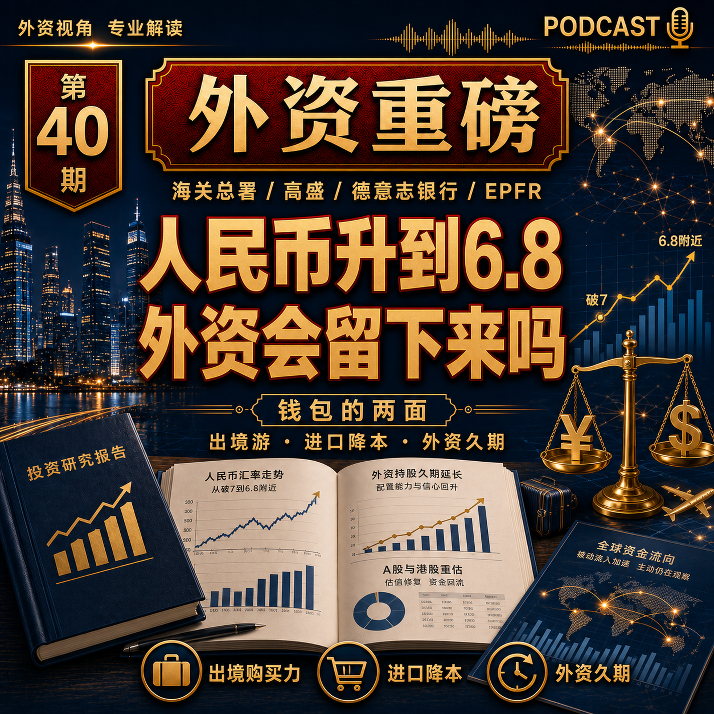
外资重磅第40期｜人民币升到六点八，外资会留下来吗？
同样一万美元学费，美元兑人民币在七点三附近时要准备七万三千元，到七月初六点八附近只要约六万七千八百元，一个家庭中间就差了五千多元。但人民币升值这件事，普通人和外资看到的不是同一个画面：对普通人是出境游、留学、海淘变便宜，对出口企业是订单折算收入变少，对外资则是一个定价开关。这期的主问题是：人民币从破七走到六点八附近，改变的不只是你的钱包账单，还会不会改变外资持有 A 股和港股的久期，也就是一笔钱愿意在这个市场里待多久？同一个汇率变量，其实要拆成四张账。钱包账：人民币升值最确定的是让美元计价的东西变便宜，但机票、税费、其他货币汇率会吃掉一部分红利，真实含义是跨境消费的底层成本下降。外贸账：海关总署数据显示二零二六年前五个月进出口总值二十点六八万亿元、同比增长百分之十五点三，顺差仍厚支撑人民币，但东盟、欧盟和机电产品在撑韧性、美国方向和劳动密集型产品在承压。久期账：外资买中国资产赚两层钱——资产收益加汇率收益，当人民币从贬值预期转向温和升值预期，持有中国资产的美元回报更有吸引力，资金就可能从战术交易放回战略配置。德银、高盛、汇丰都把人民币预测调偏强，但这些是预测不是结果，且 EPFR 数据显示先回来的是被动资金，主动长线资金仍在观察。落到资产地图有两条线：一条是经营弹性线，航空（国航、南航、东航都有 A+H 股，对美元负债和成本敏感，但也受油价客流影响，是弹性不是无风险）、进口链、出境消费；另一条是资金久期线，外资久期拉长后愿意用更低折价、更长周期重估的核心资产。这一轮最容易被误解的地方是：把升值等同于资产必涨、把升值当成单边趋势、忽视出口链压力和政策边界——机构说的是温和升值加双向波动。给三个观察信号：美元兑人民币能不能在六点八附近稳定运行、贸易顺差和企业结汇意愿、外资流入的结构是不是从被动工具型转向长线主动。真正值得盯的，不是人民币某一天又升了一点，而是这次升值有没有改变资金的时间感。本节目仅作宏观观察和研报解读，不构成任何投资建议。
⏱ 17:11 -
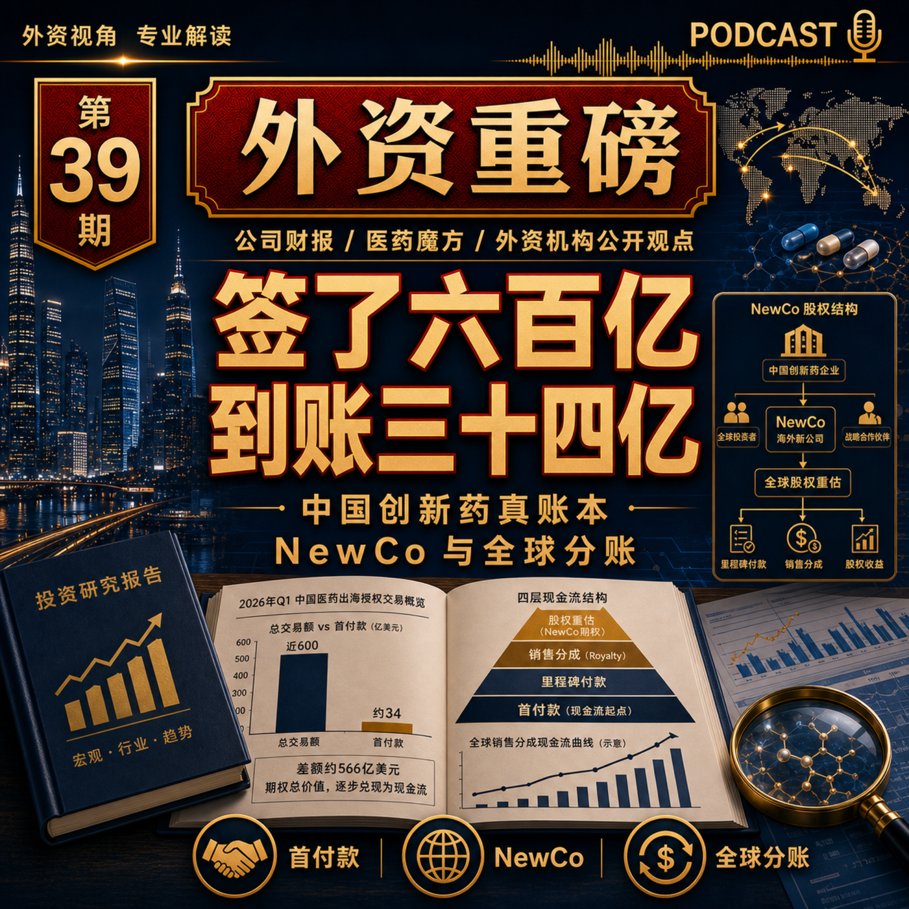
外资重磅第39期｜签了六百亿美元，到账三十四亿：中国创新药的真账本
二零二六年一季度，跨国药企在中国相关医药资产上签下的出海交易总额接近六百亿美元，但真正最先到账的首付款，只有大约三十四亿美元。差出来的五百多亿美元并没有消失，而是藏在未来的临床节点、监管审批、销售目标和股权价值里。这期不复读『创新药国产替代』，也不重讲 GLP-1，而是问一个更硬的问题：中国创新药的估值锚，能不能从『管线折现』，切换到首付款、里程碑、销售分成和 NewCo 股权这套四层现金流结构？先把基础账本说清：对外授权，也就是 license-out，把药物权益授权给海外公司开发销售，钱大致分三层——签约先拿首付款，中间看临床和审批拿里程碑款，最后药卖起来再收销售分成，也就是 royalty。二零二六年真正的新变化，是出现了第四层：NewCo，也就是把资产装进一家海外新公司，让它在海外融资、做临床甚至上市。恒瑞相关资产参与的 Kailera，今年四月已经在纳斯达克上市，中国药企不再只是卖青苗，而是开始参与海外公司的股权重估。所以六百亿美元更像一张期权总价值的报价单，外资不是突然乐观，而是被迫从折现模型切换到现金流模型来给它定价。落到公司要一层层拆：百济、恒瑞是核心定价资产，恒瑞一季度创新药销售四十五点三亿元、对外许可确认收入七点九亿元，百济一季度营收一百零五点四亿元、泽布替尼全球销售约七十六亿元；信达、药明康德是辅助验证层，药明一季度营收一百二十四点四亿元、在手订单接近五百九十八亿元。关键去伪是：总交易额不等于当期收入，当前最确定的只是首付款和部分里程碑，销售分成仍要等海外获批和商业化验证。接下来该盯三件事——首付款和对外许可收入有没有继续进财报、重点资产海外临床审批能不能推进、销售分成和 NewCo 股权能不能从故事里的远期价值变成资产负债表上的真实项目。真正的大考是中报和后续海外分账。本节目仅作宏观观察和公开资料梳理，不构成任何投资建议。
⏱ 18:37 -
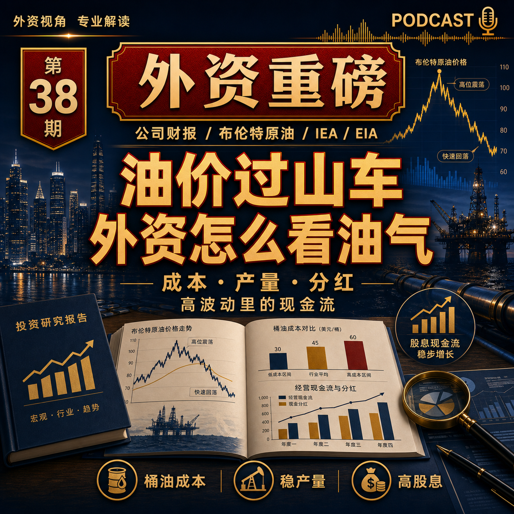
外资重磅第38期｜油价坐过山车，外资为什么还在买中国油气？
油价在二零二六年上半年走了一次过山车：地缘冲突一度把布伦特原油推到每桶一百美元以上，随后供应恢复、需求转弱又快速回落到七十美元附近。奇怪的是，油价剧烈波动，中国油气龙头的利润表并没有同步崩掉——中国海油利润继续增长，中国石油实现油价下降但利润仍小幅增长，中国石化炼油修复，中海油服收入也在增长。这期想讲清一个变化：外资现在看中国油气，不是在赌油价方向，而是在做一场现金流筛选。油价决定波动，成本决定生死，现金流决定估值。四家公司其实是四种交易。中国海油是低成本上游：二零二六年一季度净产量两亿零五百一十万桶油当量、同比增长百分之八点六，全部成本每桶二十八点四一美元、作业成本每桶六点六六美元，油价掉下来也守得住利润垫。中国石油是一体化现金流机器：一季度平均实现原油价格每桶六十四点零八美元、同比下降百分之八点五，归母净利润却增长百分之一点九，靠的是炼化销售和天然气缓冲，天然气销售量同比增长百分之六点九。中国石化是炼化价差资产：营收下降，但归母净利润按中国会计准则增长百分之二十八点二，赚的是加工价差修复，不是油价方向。中海油服是资本开支的影子资产：它不直接卖油，卖的是三桶油愿不愿意花钱，是滞后于油价的变量。四家都叫油气，但不是同一种交易。所以这期的分水岭是——市场不再交易“石油”两个字，而是在交易不同账本的抗波动能力。谁在油价七十到一百美元之间不被成本击穿，谁不依赖单一价格，谁能持续产量，谁的高分红来自真实经营现金流而不是页面上的股息率，谁就更像能穿越油价波动的资产。风险也要讲清楚：油价中枢下移、炼化周期不稳定、资本开支高度周期化、分红并非刚性承诺、能源转型压制长期需求，这些都还在。一句话总结这一期：油价是噪音，现金流才是信号。本节目仅作宏观观察和公开资料梳理，不构成任何投资建议。
⏱ 16:20 -
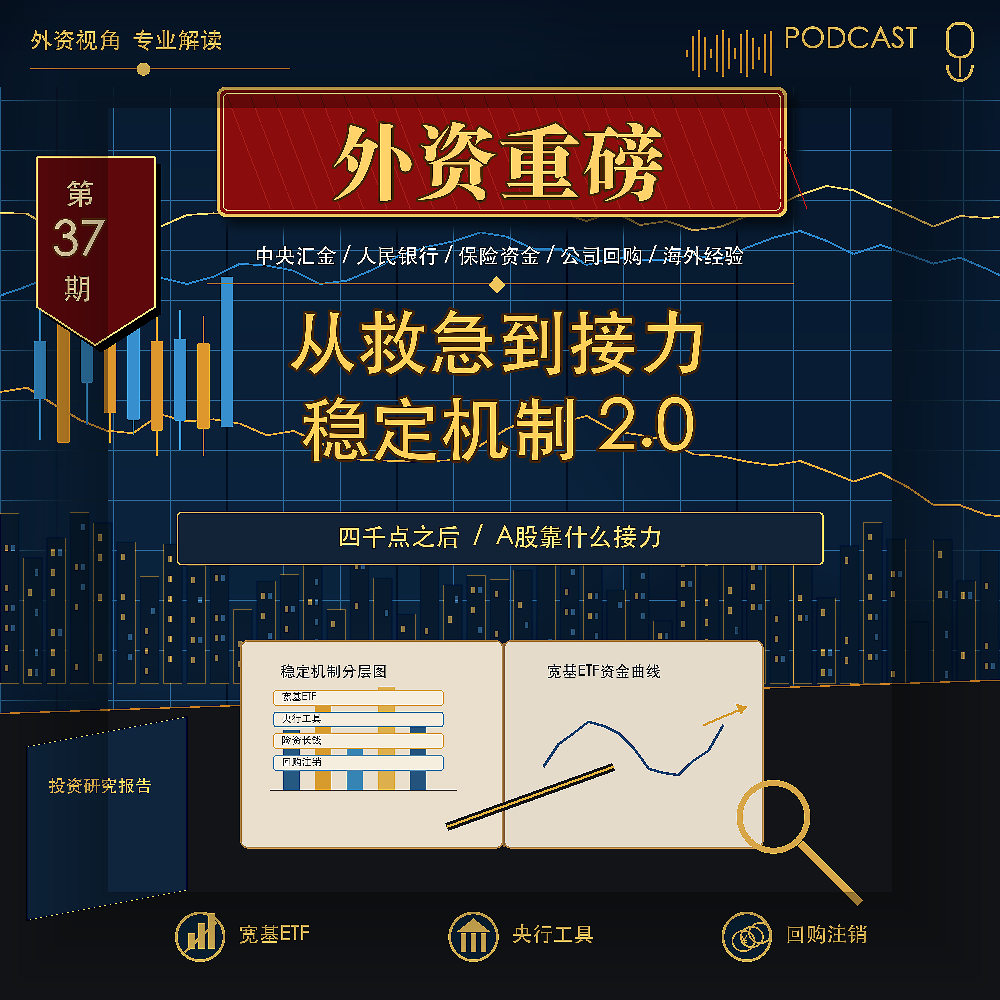
外资重磅第37期｜从救急到接力：A股稳定机制的2.0打法，谁在接棒？
A 股到了四千点以后，市场最重要的问题变了——以前问谁来救急，现在更关键的是谁来接力。这期讲的是 A 股稳定机制的历史演进：从二零零八年救信心，到二零一五年救流动性，再到二零二四年以来的稳定机制二点零。核心观点很简单：真正成熟的行情，不是稳定资金永远站在台前买，而是它可以慢慢退到背景里，险资、公募、上市公司回购、外资被动盘和居民配置资金还能接上。历史对照三段。二零零八年：印花税下调、汇金增持三大行，救的是信心，政策止血之后真正大涨靠的是更大的宏观信用扩张。二零一五年：证金公司增资、央行流动性支持、外媒引用瑞银估算国家支持资金买入规模约一万二千四百亿元，救的是流动性踩踏链条，但急诊室不能变长期疗养院。二零二四年以来的二点零：分成四层——宽基 ETF（截至二零二五年底中央汇金系持有市值超一万五千亿元）降尾部风险；央行工具（互换便利五千亿、回购增持再贷款三千亿）提供流动性背书；险资（二零二六年一季度末股票加基金余额五点九万亿元、占比百分之十五点五）改善买方期限结构；回购注销（截至六月二十五日二零二六年已完成约六百二十亿元）强化股东回报。海外对照：美国救信用（TARP + 二零二零年美联储公司信用工具）、韩国救汇率和流动性；中国这一轮更强调买方结构和公司治理。四类钱的接力节奏：稳定资金市场极端时进、恢复后增量退坡；险资利率下行股息率有吸引力时进、风险预算接近上限时再平衡；上市公司股价低于内在价值现金流充足时回购、条件变差时停；外资和被动盘跟风险溢价、指数权重和盈利预期走。四千点之后真正该观察的不是急救资金还会不会买，而是它能不能退到背景里，险资、回购、外资被动盘、公募和居民配置资金能不能按自己的规则完成接力。稳定机制二点零的价值不只是托起指数，而是把市场带进一个更看兑现、更看纪律、更看长期资金定价能力的新阶段。本节目仅作宏观观察和公开资料梳理，不构成任何投资建议。
⏱ 19:05 -
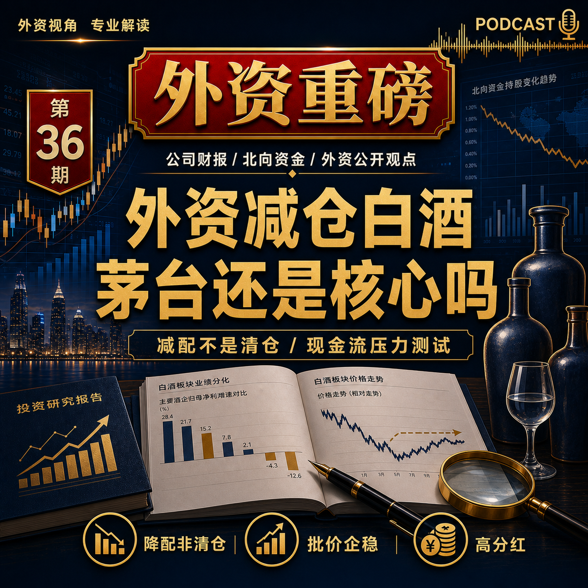
外资重磅第36期｜外资清仓白酒了吗？茅台还算不算『中国核心资产』
二零二五年贵州茅台收入和利润双双下滑，二零二六年一季度才恢复低个位数增长——连茅台都要靠批价、库存和现金流重新证明自己，白酒还是外资眼里的核心资产吗？这期不讨论喝不喝酒，只问一个更准确的问题：外资是在清仓白酒，还是在给白酒换估值锚？先给结论：白酒没有从核心资产名单里消失，而是从消费成长股，变成了现金流资产、渠道修复题、价格体系压力测试。三颗钉子定位周期。资金账：公开转述里，北向资金持有白酒市值从二零二四年底约一千五百七十六亿元降到二零二五年底约九百六十六亿元，排序从第二位掉到第四位——不是清仓，而是从默认重仓变成重新验货，验三件事：价格体系稳不稳、渠道库存有没有出清、分红现金流能不能弥补增长放慢。批价账：六月初公开报价，飞天散瓶约一千五百八十元到一千六百二十元区间，普五约八百六十元到八百八十元区间，这是渠道温度而非官方指导价，显示价格体系从强势溢价进入低位企稳弱修复。公司账拆五家：茅台二零二六年一季度收入约五百三十九亿元、净利约二百七十二亿元，低速增长但利润底盘厚，从成长核心资产变成现金流核心资产；五粮液一季度收入约二百二十八亿元、净利约八十一亿元，要验普五批价和资本回报纪律；汾酒一季度收入约一百四十九亿元、净利约五十四亿元，同比分别下降约百分之十和约百分之十九，从逆势韧性样本进入增长质量验证；洋河一季度收入约八十二亿元、净利约二十五亿元，继续下滑；泸州老窖一季度收入约八十亿元、净利约三十七亿元，同比分别降约百分之十四和约百分之十九。外资对白酒要求三道门：批价门（飞天和普五批价先稳，信心才能稳）、渠道门（合同负债和库存周转比口头说动销恢复更重要）、现金流门（高毛利和强现金流仍是护城河，但高分红不是万能护身符，批价继续下行高分红只能延缓估值下移）。外资减白酒，减的不是所有白酒公司的存在价值，而是过去那种白酒整体高确定性的估值溢价。核心结论只有一句：外资不是在抛弃白酒，而是在把白酒从消费成长股，重新定价为现金流压力测试。市场不再为标签付费，只为验证付费。本节目仅作宏观观察和公开资料梳理，不构成任何投资建议。
⏱ 14:19 -
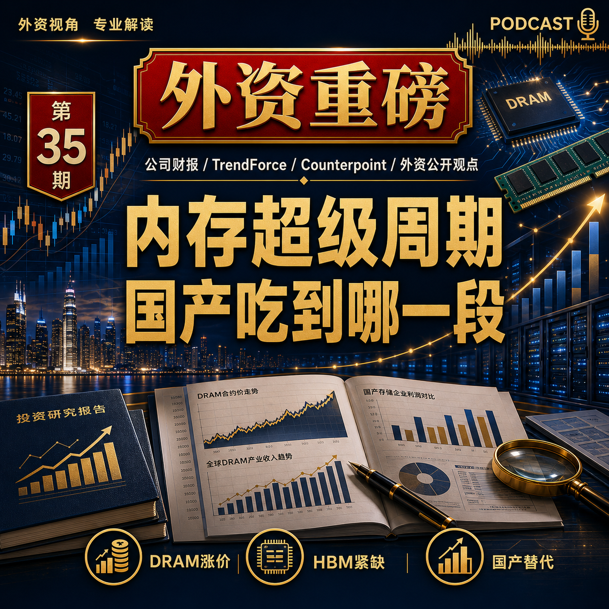
外资重磅第35期｜内存超级周期到了哪一站？苹果罕见涨价、海力士奖金，国产存储吃的是哪一段
二零二六年六月二十五日，苹果罕见上调 Mac 和 iPad 售价，理由直指 AI 数据中心抢走内存、相关组件价格涨速前所未见。连全球供应链议价能力最强的苹果都开始把内存成本转嫁给消费者，说明这轮存储涨价已经从内存原厂的利润表，一路传导到普通人的购物账单。这期不复读『半导体国产替代』，而是问：内存超级周期走到了哪一站？海外原厂掌握高价值环节之后，A 股里的国产存储到底吃的是价格、升级，还是库存？先用价格坐标定位周期：集邦咨询统计，二零二六年一季度传统 DRAM 合约价环比上涨约百分之九十三到九十八、带动全球 DRAM 收入环比增长约百分之八十一到约九百七十亿美元，二季度预计再涨约百分之五十八到六十三。SK 海力士一季度营业利润率约百分之七十二，是超级周期的利润温度计；这一轮不是手机电脑卖疯，而是 AI 服务器把高带宽内存和企业级存储抢走。但利润是分层的：全球 DRAM 仍是三星、SK 海力士、美光接近九成的寡头格局，HBM 更集中在少数高端玩家，国产暂时吃不到高端 HBM 这块核心利润。长鑫科技、长江存储代表的中国原厂约拿到全球核心存储收入一成份额，却还没进入 HBM 利润池的中心——长鑫已注册未挂牌、长江存储才进辅导阶段。A 股国产存储吃的是不同来源的利润，要一道道拆。澜起科技买的是 AI 服务器内存互连升级，但归母利润里夹着非经常性收益，要看扣非和互连芯片占比；兆易创新买的是利基存储量价齐升，一季度收入翻倍、净利增速超过五倍，要看后续毛利能不能稳住；江波龙买的是模组和库存弹性，单季利润超过去年全年，但经营现金流为负、存货高企，是弹性和风险同源的高弹性票。这一轮像新能源车国产替代的上半场，却更像锂矿的利润周期：产业趋势可以很长，价格红利不会永远持续。三个后续信号：DRAM 和 NAND 合约价、三大原厂扩产节奏、A 股公司的财报质量。专业的判断不是看见『存储涨价』就兴奋，而是分清谁吃价格、谁吃升级、谁吃库存，以及谁会在周期反转时先被账本反噬。本节目仅作宏观观察和公开资料梳理，不构成任何投资建议。
⏱ 30:16 -
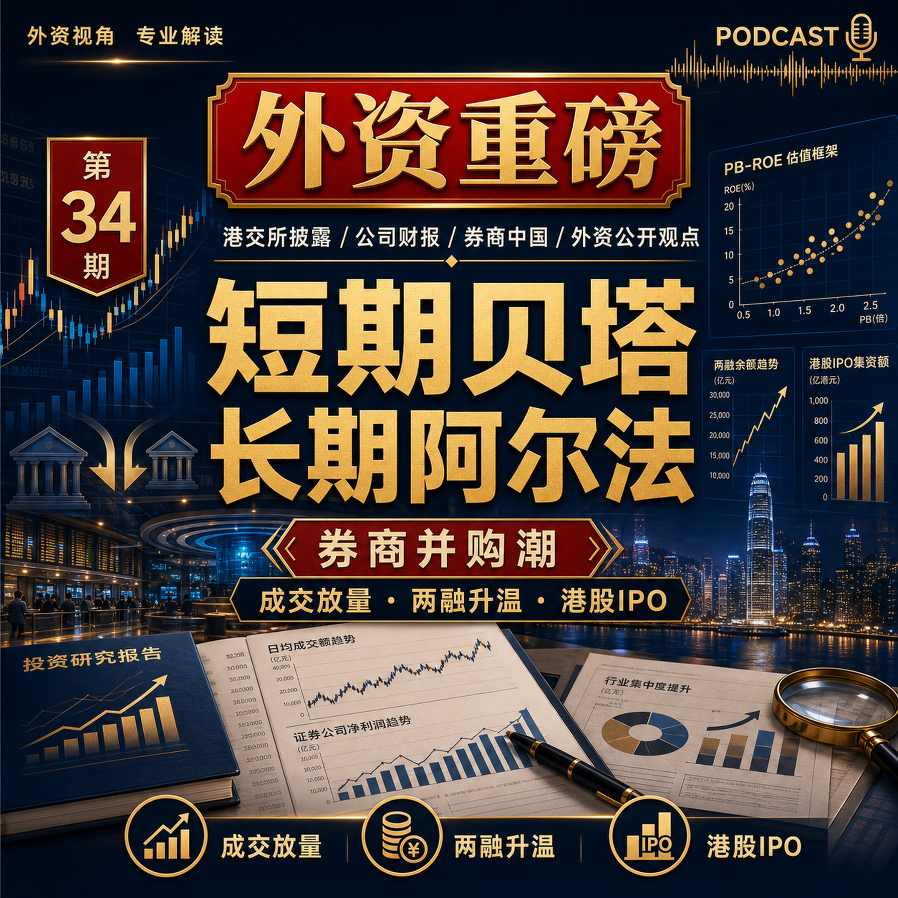
外资重磅第34期｜券商这波涨，是短期 beta 还是长期 alpha？两融、IPO、并购，外资在重新定价什么
二零二六年上半年，A 股成交动辄破三万亿，券商被很多人当成牛市印钞机。但外资这次看的不是『券商会不会涨』，而是更冷的一个问题：这轮券商行情，到底只是成交放量带来的短期 beta，还是中国资本市场集中化、国际化带来的长期 alpha？这期把券商和交易所当成资本市场的『卖水人』，但加上风险边界——它是市场活跃度的放大器，不是无风险印钞机。拆四本账加一本估值账。成交账：二零二六年一到五月全市场日均股票成交额约两万六千四百九十七亿元、同比增长约百分之八十九，A 股新开户约一千七百二十九万户、增长约百分之五十八。杠杆账：一到五月两融新开户约七十八万户，到六月二十三日两融余额已站上三万亿元附近。投行账：港股前五个月新上市六十二家、IPO 集资额约一千六百六十八亿港元、同比翻倍，互联互通南北向同步放量。并购账：国泰海通吸收合并海通后，二零二六年一季度表面归母净利同比下降约百分之四十八，但剔除去年负商誉高基数的扣非利润同比增长约百分之七十三。落到行业，四十二家上市券商一季度合计归母净利约六百零八亿元、增长约百分之十七。估值账：截至六月下旬证券公司指数 PB 约一点三倍、仍处历史偏低区间，券商 ETF 年内一度仍为负收益——ROE 在修，PB 还没完全修。五个样本对应三种风险收益：中信证券是稳健龙头、买行业 beta；国泰海通是并购整合 alpha、要盯扣非和成本协同；华泰证券赌财富管理和平台化；中金公司吃港股 IPO 和跨境投行弹性；香港交易所是收过路费的交易所基础设施。三个后续信号：日均成交额和新开户能不能持续、扣非利润和 ROE 能不能改善、港股 IPO 和互联互通能不能维持。结论不是『券商一定赢』，而是：如果只是阶段性热闹，券商就是短期 beta；如果成交、ETF、互联互通、IPO 和并购重组一起把行业做大做集中做国际化，真正值得外资重估的，是资本更厚、客户更强、投行更深、整合能力更硬的头部机构和交易所。本节目仅作宏观观察和研报解读，不构成任何投资建议。
⏱ 23:56 -
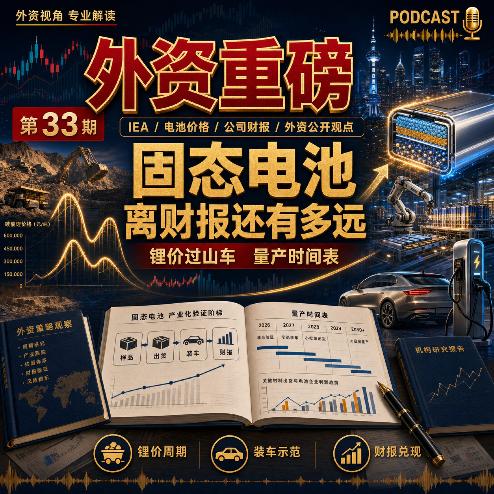
外资重磅第33期｜固态电池离财报还有多远？锂价过山车、量产时间表，外资在重新定价什么
固态电池被称为下一代动力电池的『圣杯』，但截至二零二六年六月，最先让普通人感受到变化的，反而不是全固态，而是比亚迪二代刀片电池和超高功率闪充这类现有锂电体系的继续进化。所以这期不问『固态是不是好技术』，而是问：它到底是真实技术拐点，还是一次提前透支的估值故事？半固态、全固态、锂矿周期、材料出货和整车装车之间，谁先进入财报？把固态电池产业链拆成四层。第一层是已经进财报的电池龙头：宁德时代二零二五年营收四千二百三十七亿元、同比增长约百分之十七，净利润七百二十二亿元、增长约百分之四十二，但利润根基仍是液态锂电与储能，固态更像未来期权。第二层是上游锂矿，赣锋、天齐先看的是锂价周期——中国碳酸锂价格从二零二二年高位每吨近六十万元，跌到二零二五年约六万元，到二零二六年六月约十五万八千五百元，是新能源周期股，不是纯科技股。第三层是材料设备这类『卖铲人』，当升科技二零二五年营收一百零三点七四亿元、增长约百分之三十七，固态材料已有二十吨级以上批量供货、固液专用正极累计千吨级出货，并导入清陶、卫蓝、辉能、赣锋锂电等客户。第四层是纯概念层，最危险。IEA《全球电动车展望》显示，二零二五年磷酸铁锂已占全球电动车电池装机超过百分之五十五、比三元电池包便宜超过百分之四十——全固态在爬坡，磷酸铁锂也没停下来。固态电池会来，但二零三零年前很难淘汰磷酸铁锂和液态锂电，更可能是多路线共存：高端先用固态、经济型继续用磷酸铁锂、储能大量用磷酸铁锂和钠离子。宁德时代给出的坐标是二零二七年小规模量产、二零三零年前后才更大规模，丰田目标二零二七到二零二八年，曾毓群把全固态成熟度放在九级制里约四级。给三个后续验证信号：装车示范是否按节奏落地、材料出货能否持续放量、财报里有没有收入占比。外资真正在重新计算的，不是『圣杯』这两个字，而是今天这个价格买到的，到底是已经进财报的现实盈利，是锂价周期的高贝塔，是正在卡位的材料订单，还是一个还要等好几年的故事。本节目仅作宏观观察和研报解读，不构成任何投资建议。
⏱ 16:17 -
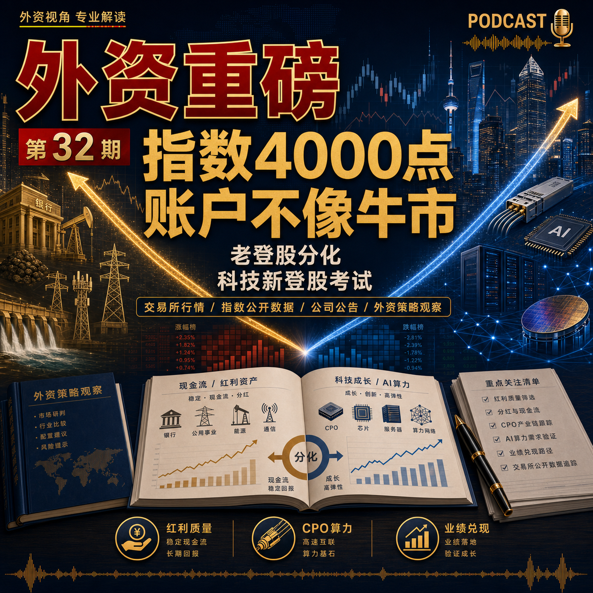
外资重磅第32期｜上证4000点后，钱到底在买什么？指数是牛市，账户为什么不像
上证指数回到四千点附近，但很多人的账户不像牛市——很多股票还停在大盘三千点时代，甚至更低。以二零二三年十月二十日上证两千九百八十三点为基准，到二零二六年六月十八日约四千零九十点，指数涨了约百分之三十七，可白酒、地产链、部分消费医药和新能源旧龙头不但没涨，反而更低。所以这期真正要问的不是有没有牛市，而是：谁在牛市里，谁还在熊市里？上证四千点后，钱到底在买什么？先把『老登股』拆成四层：广义老登股（银行、白酒、煤炭、石油、电信、电力、公用事业、保险）、红利资产（高股息高分红低估值）、红利质量股（盈利质量好、经营现金流稳、ROE 不塌、分红有纪律）和伪老登股（只是股价低的价值陷阱）。数据印证分化：截至六月一日，中证红利年内约涨百分之四，红利质量反而跌约百分之三、红利成长跌更多——市场买的是确定性现金流，不是老旧感。科技这边，二零二六年一到五月申万通信涨百分之五十五以上、电子涨百分之四十五以上；四月二十七日 TMT 成交额破一万亿元、占全市场约百分之四十点七，五月电子单月成交近十六万亿元、占 A 股约百分之二十八——拥挤到所有人都信的程度，进入业绩兑现考试期。个股样本最扎心：茅台从一千六百四十五元跌到一千二百一十五元（约负百分之二十六）、五粮液腰斩、万科 A 跌约百分之七十三、隆基绿能跌约一半；而中际旭创涨超百分之一千三百、新易盛涨近百分之一千五百、宁德时代涨约百分之一百一十四。红利样本则要算分红：工商银行不复权都涨约百分之四十九点五跑赢上证，中国神华、长江电力涨幅有限，中国移动 A 不复权价格甚至微跌。A 股和港股现在极不均衡：成交、涨幅、账户体验三重撕裂——六月十八日沪指跌百分之零点四三、科创五十涨百分之三点八四，全市场成交约三万三千多亿元却有近三千四百只个股下跌。后面大概率走三条线：科技线从估值扩张转向业绩验证，红利线从无脑高股息转向分红质量筛选，低位传统线有反弹但反弹不等于反转。真正的风格切换不是从科技切到红利，而是从讲故事切到看兑现——谁能用订单、利润、现金流兑现，谁就在牛市里；兑现不了的，就算指数四千点，也还在自己的熊市里。钱最终在买两种东西：确定性现金流（红利质量）和可验证的产业成长（科技兑现），夹在中间的伪红利、伪成长、伪低估最容易让人误会。本节目仅作宏观观察和公开资料梳理，不构成任何投资建议。
⏱ 17:09 -
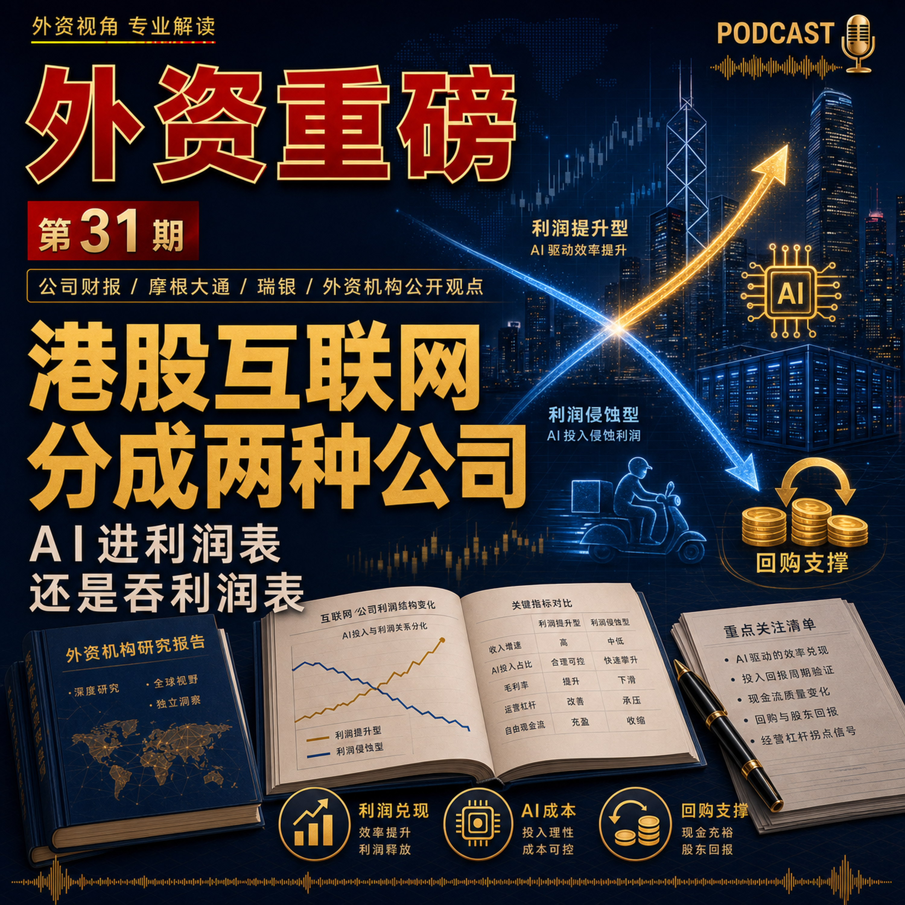
外资重磅第31期｜港股互联网分成了两种公司——AI 到底进了利润表，还是吞了利润表
上一期讲外资加仓中国的三条线，第一条是人工智能与民营科技龙头。这一期把这条线里最核心的一块——港股和中概互联网单独拿出来，对照二零二五年年报和二零二六年一季度最新财报，看它们到底兑现了什么。表面都在讲“互联网龙头讲人工智能”，翻开财报却分成了截然不同的两类：一类利润创历史新高、还在大手笔回购；另一类收入还在涨，利润却被人工智能、云和即时零售的投入压了下去。本期的主问题是：港股互联网这一轮，外资到底该怎么重新定价——是看估值修复，还是看利润、回购和人工智能商业化到底进了哪张表？全篇用“利润兑现能力分层”作主线，把五家公司拆成两派。收割派（已把投入变成利润或收入）：腾讯二零二五年营收七千五百一十七点七亿元、同比增长百分之十四，Non-IFRS 经营利润两千八百零六点六亿元、同比增长百分之十八，二零二六年一季度若剔除混元、元宝等新人工智能产品，Non-IFRS 经营利润同比增长百分之十七，叠加全年回购约八百亿港元、合计还给股东超一千二百亿港元；快手二零二五年经调整净利润二百零六亿元、同比增长约百分之十六点五，可灵二零二六年一季度收入超过六点五亿元、同比增长超百分之三百，三月年化收入运行率（ARR）接近五亿美元。投入派（主动牺牲当期利润换未来卡位）：阿里 FY2026 营收首次站上万亿、Non-GAAP 净利润同比下降百分之六十二，钱花在人工智能、云与即时零售；美团二零二五年由盈转亏二百三十四亿元、核心本地商业被即时零售大战打穿，一季度亏损边际收窄；京东守住一万三千亿零售基本盘、用亏损抢即时零售船票。口径上严格区分公司直接披露、分部口径与推算口径（如阿里人工智能相关收入约九十亿元为按外部云收入约三成推算，非公司直接披露）。两类公司放在一起，二零二五年年报加二零二六年一季度的全貌不是“互联网集体复苏”，而是一次围绕利润兑现能力的分层：收割派定价的是确定性（利润已兑现、回购实打实），投入派定价的是期权（今天牺牲的利润未来能否通过云、人工智能、即时零售和出海赚回来）。最关键的分水岭是人工智能到底进没进利润表，核查锚点压成三张表：毛利率有没有因人工智能和高毛利业务提升、经营利润有没有被即时零售打穿、自由现金流与回购能不能覆盖人工智能资本开支。风险写明：即时零售份额战的消耗、人工智能资本开支的回报周期、把高增长线性外推、以及股东回报节奏。三个长期信号：人工智能收入的占比与绝对值、即时零售大战的拐点、股东回报的持续性。本节目仅作宏观观察和研报解读，不构成任何投资建议。
⏱ 14:51 -
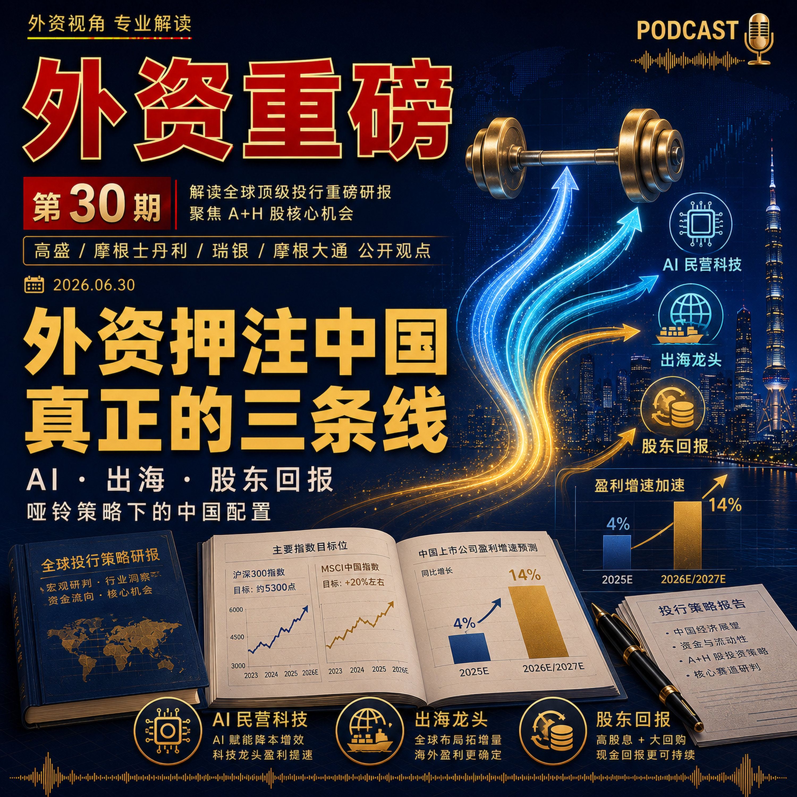
外资重磅第30期｜外资买的不是整个中国，是三个更窄的中国——年中复盘卖方押注的三条线
二零二六年开年，华尔街几乎齐声唱多中国——高盛、摩根士丹利、瑞银、摩根大通一家接一家上调中国股指目标，很多人以为这是一轮全面牛市。但走过上半年再复盘，答案更窄也更残酷：外资策略不是在买整个中国，而是在押注三个更窄的中国——能用人工智能进利润表的中国、能去海外赚钱的中国、能把现金还给股东的中国。这一期不讲单个行业，而是站在卖方策略的高度，把外资的中国配置框架拆开，看年初定下的方向到六月中旬兑现了多少、钱到底压在哪三条线上，并解释一个普遍的体感：为什么指数在涨、账户却没怎么动。先分清两层：第一层是年初机构给出的年度框架，第二层是走到六月中旬的年中答卷——前者是观点，后者是验证。据公开转述，高盛在二零二六年初对 A 股、H 股维持“超配”，预计明晟中国与沪深三百分别上涨约百分之二十和百分之十二，把沪深三百十二个月目标上调到五千三百点附近，核心引擎是上市公司盈利增速从二零二五年约百分之四加速到二零二六、二零二七年约百分之十四，逻辑从“便宜”切到“盈利接棒”。年中验证：截至二零二六年六月十七日，沪深三百约四千九百三十点，接近但未兑现目标；截至六月十六日，恒生指数年内仍约下跌百分之四点四、恒生科技跌幅超百分之十五，分化明显；同期南向资金年内累计净流入约三千零六十五点七六亿港元（内地资金南下，不是外资）。把高盛、摩根士丹利的公开观点归拢，押注集中在三条线：一是人工智能与民营科技龙头（腾讯、阿里巴巴、小米及中芯国际、华虹半导体等算力光模块链，六月宽基指数样本调整让沪深三百们的“科技含量”继续上升）；二是出海龙头（比亚迪、美的、海尔、三一、徐工、安克，赚的是海外利润表）；三是股东回报（高股息央国企的“股息债化”，加上大额回购：二零二五年港股回购总额约三千一百九十一亿港元、腾讯独占约四分之一，腾讯全年回购约八百亿港元、分红约四百一十亿港元、合计超一千二百亿港元，阿里截至二零二五年九月底剩余回购授权约一百九十一亿美元）。三条线合起来就是一种“哑铃打法”：一头押高弹性的人工智能与科技龙头、赌利润提速，另一头押高股息高回购的稳健资产、赌确定现金回报，中间不押。这也解释了“指数涨、我没赚”——这是龙头与结构的牛市，不是普涨，没被这套框架覆盖的中小盘可能根本没动。风险写明：外资观点有年初到年中的时间差；盈利能否从百分之四兑现到百分之十四是命门；美元与外部利率是总开关；人工智能是最拥挤的交易、一致本身就是风险。三个长期信号：盈利增速是否真从个位数走向两位数；南向资金与外资流向分开看（外资是停在 ETF 还是下沉到个股）；三条线必然分化，谁先用财报兑现谁就接棒成主线。本节目仅作宏观观察和研报解读，不构成任何投资建议。
⏱ 13:07 -
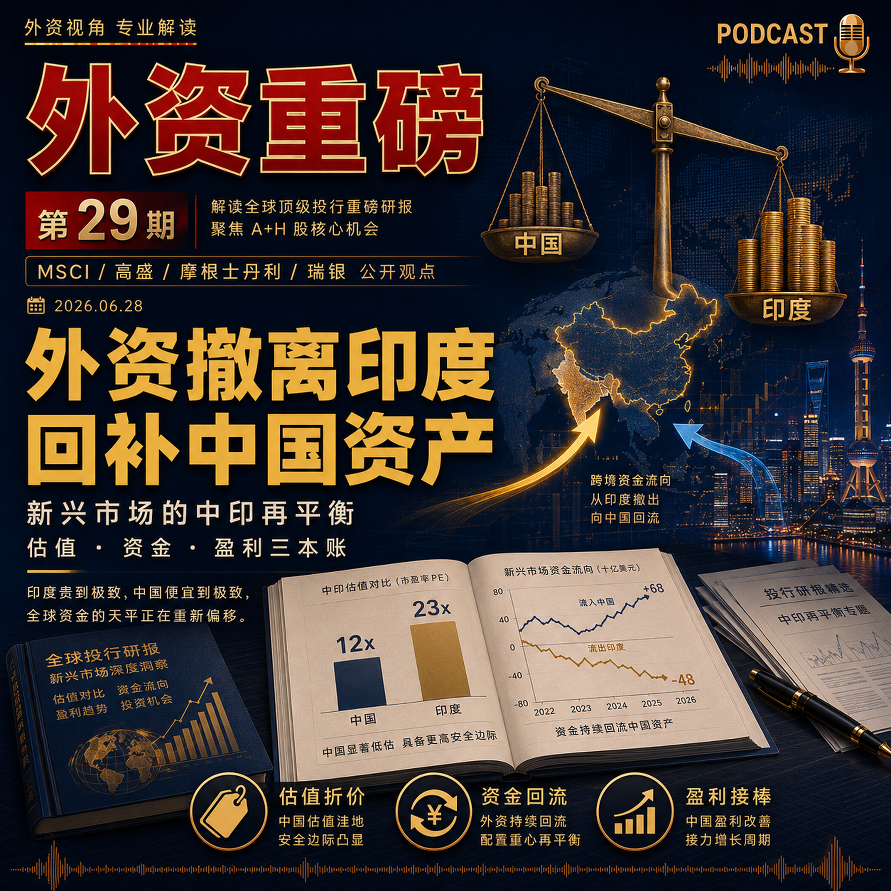
外资重磅第29期｜外资正从印度撤、往中国回？这场新兴市场再平衡，已经进入2.0
过去几年全球新兴市场基金经理的标准动作是闭眼做的：减中国、加印度。但从二零二五到二零二六年这个共识第一次被打脸——二零二五年港股恒生指数全年大涨约百分之三十三、近十年最好，印度却在创新高后掉头、跑输新兴市场超过五十个百分点；外资二零二五年从印度净流出约两百亿美元，二零二六年又走掉超过三百亿，而全球资金正借道 ETF 把中国敞口加回来。“中国便宜、印度贵”这个对比并不新鲜，但二零二六年出现了三个新变化，让它从老对比升级成“再平衡 2.0”：接盘中国的钱换了人、印度最硬的本土底盘开始松动、回补中国也不再是无脑买入。先厘清口径：明晟新兴市场指数按市场分类统计，这两年权重冲得最快的是受 AI、半导体行情带动的中国台湾和韩国市场，本期不聊这条 AI 主线，只看中国内地资产与印度的再平衡——印度权重已从二零二四峰值约两成降到二零二六年五月约百分之十二（六年多新低），中国内地资产约百分之十八到十九，仍明显高于印度。三本账各藏一个新变化。估值账：高盛口径下明晟中国与沪深三百前瞻市盈率约十二点四与十四点五倍仍折价，印度约二十二倍、对新兴市场溢价高达六成（历史均值约五成）。资金账（新变化一·钱换人）：印度二五年净流出约两百亿、二六年又超三百亿；回补中国第一波是被动 ETF 与南向资金（二五年创纪录约一万四千亿港元、二六年到年中超两千八百亿），二六年升级为主动型海外基金加仓 + 中东主权长钱进场（参与港股 IPO 基石比例从二四年初不到两成升到二六年初近四成，宁德时代等明星项目引入科威特、阿布扎比主权基金）。印度本土底盘（新变化二·压舱石松动）：旧逻辑是本土散户托底，但二六年印度黄金白银 ETF 吸金一度超过股票基金、小盘基金流入创近一年多新低、政府上调股票期货期权交易税降温。盈利账（新变化三）：叙事从估值修复转向盈利接棒，“反内卷”出清产能、修复利润率成新抓手，资金从互联网龙头分流向硬科技；高盛维持 A/H 超配、预测二六年明晟中国与沪深三百约百分之二十与百分之十二涨幅，摩根士丹利王滢称二六年是巩固估值修复成果之年、外资增配空间仍大、建议哑铃策略。落点是明晟中国权重最高的腾讯、阿里巴巴、美团、小米等大盘龙头，仅为指数级配置，不等于个股精选。回补中国已不再是无脑买入（新变化三的另一面）：二零二六年五月南向资金年内首现单月净流出约三百五十亿港元，恒生科技从托底转为区间博弈，下半年还有解禁高峰，资金从涨多的互联网龙头转向硬科技——是结构切换、不是见顶。三个长期信号：一是明晟里中印权重变化；二是外资流入中国的“质量”，是停留在被动 ETF 还是主动外资/中东长钱下沉到个股，同时盯印度本土散户是否从黄金回流股市；三是两国盈利兑现，印度能否撑住约二十二倍、中国能否用利润接棒十二倍。风险写明：美元美债利率是总开关，印度长期故事未证伪（不少外资同时仍看好印度未来一年），中国盈利兑现仍在验证。本节目仅作宏观观察和研报解读，不构成任何投资建议。
⏱ 13:34 -
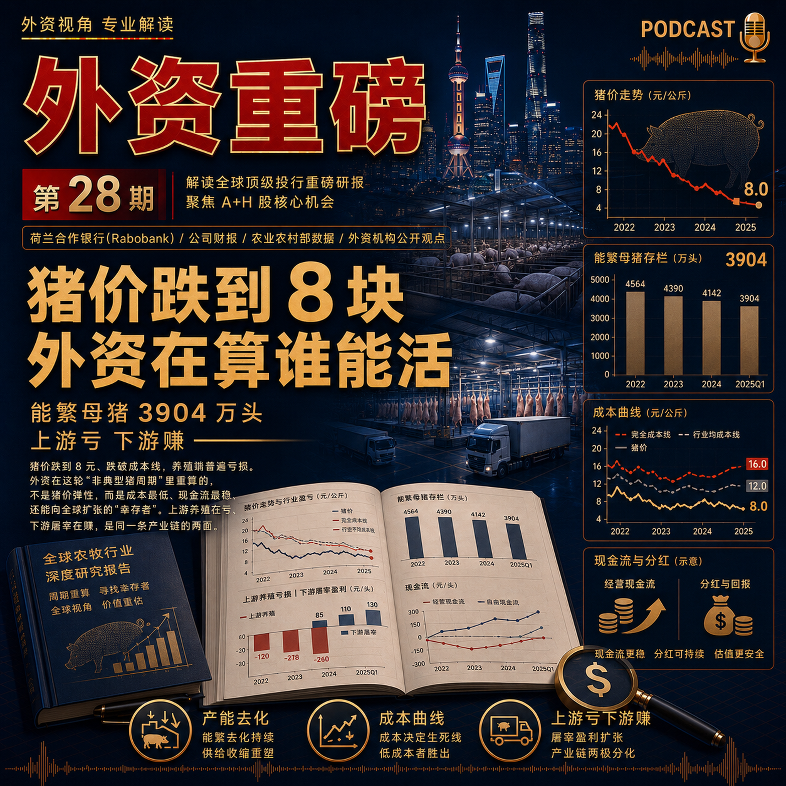
外资重磅第28期｜猪价跌到8块：这轮“非典型猪周期”，外资在算谁能活
二零二六年的猪周期，正在变成很多养殖户“熬冬”的现实。截至二零二六年四月，全国生猪均价一度跌到每公斤八元附近，是近八年低位，自繁自养头均亏损一度超过四百元；牧原二零二五年还净赚一百五十八亿元，到二零二六年一季度就转为亏损约十二亿元。但同样在低猪价里，上游养殖在大面积亏损，下游屠宰和肉制品反而在改善。核心问题是：这轮“非典型猪周期”里，外资到底在重算谁的账？上游账本看三家。牧原靠极致成本熬周期，完全成本到三月已降到每公斤十一点六元；温氏用“公司+农户”和黄鸡业务对冲，二零二五年归母净利五十二点六六亿元、同比下降四成多；新希望饲料赚钱、养猪亏钱，二零二五年由盈转亏、亏损约十八亿元，但靠饲料和现金流稳住底盘。下游账本看两家。双汇发展二零二五年归母净利五十一亿元、同比微增百分之二点三，低猪价压低原料成本反而成了顺风；万洲国际靠中国、北美、欧洲三地和美国史密斯菲尔德，二零二五年收入二百八十亿美元、股东应占利润十五点六七亿美元。一条产业链，两种生意，两套定价逻辑。外资视角看的不是“猪价哪天涨”，而是三件事：产能去化的节奏（截至二零二六年五月能繁母猪存栏约三千九百万头，农业农村部把正常保有量下调到三千七百五十万头）、谁的成本最低最扛跌、以及下游肉制品的稳定现金流。荷兰合作银行（Rabobank）也提示，全球猪肉二零二六年上半年大概率低位、下半年才可能因供给收紧反弹。养殖股的定价，正在从“赌猪价什么时候涨”，转向“比谁的内功更扛跌”。文中公司仅作产业链资产地图，不构成任何投资建议。
⏱ 16:40 -
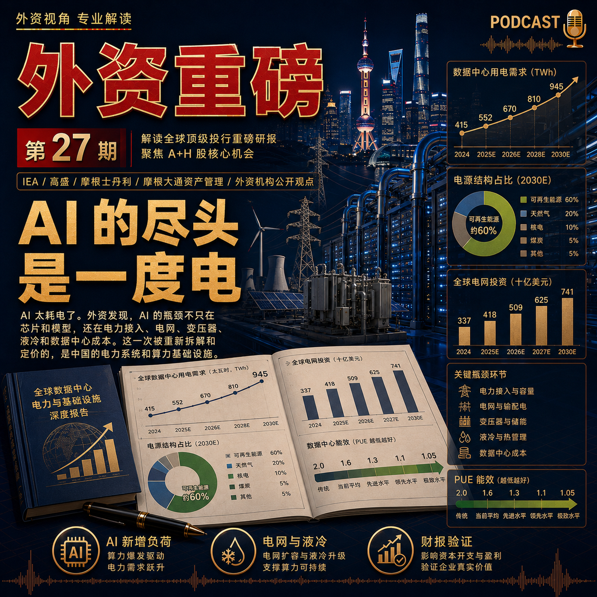
外资重磅第27期｜AI 太耗电了：外资为什么重算中国电力和算力基建
你随手问 AI 一句话，屏幕背后是一排排 GPU 在烧电。AI 看起来跑在“云”上，其实跑在电、机房、冷却水和电网上。本期用五张账拆 AI 用电这条线：从用电需求、电源结构、电网设备、数据中心效率到财报验证，看哪些公司能把电力、冷却和算力需求真正写进收入、订单、毛利率和现金流。
⏱ 24:47 -
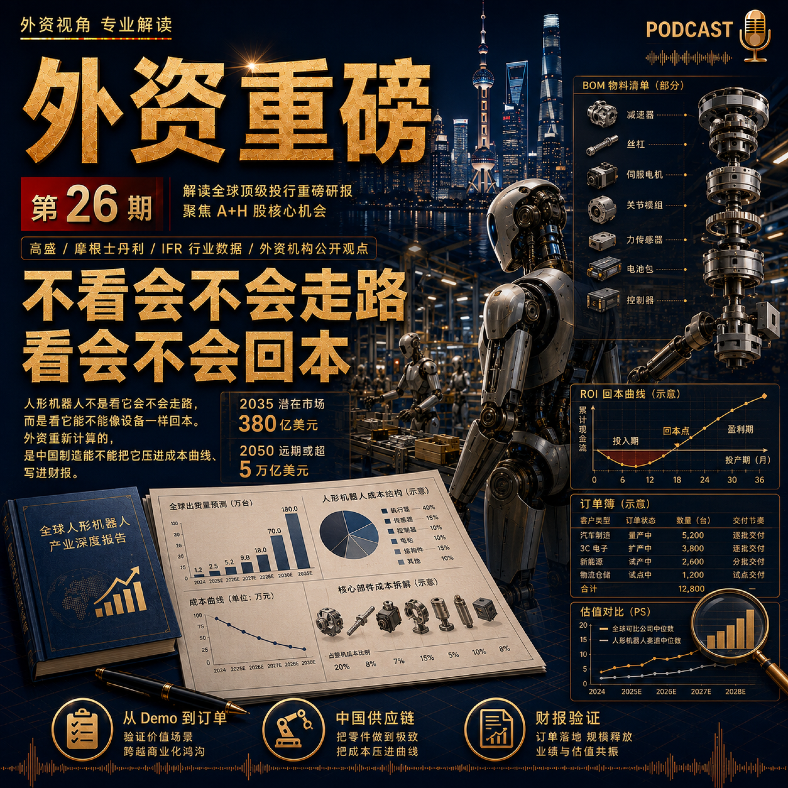
外资重磅第26期｜人形机器人：外资不看它会不会走路，看它会不会回本
人形机器人第一波商业化的主战场大概率不在家里，而在工厂——家庭是“全科保姆”，工厂是“专科工人”。视频不是生意，Demo 像样板房，订单才是入住率。本期对比海外整机叙事与中国供应链筹码，看它能不能从“项目”变成能进财报、能回本的“产品”。
⏱ 21:06 -
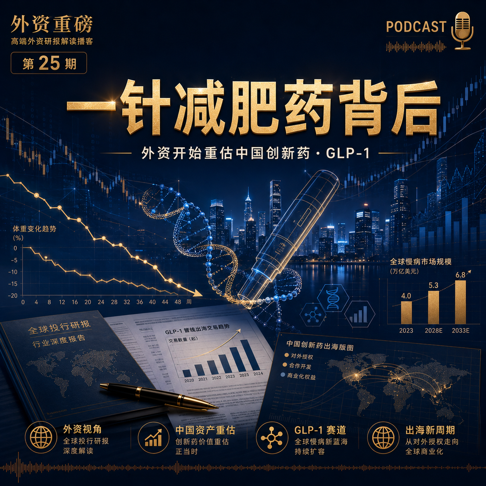
外资重磅第25期｜一针减肥药背后：外资开始重估中国创新药
资本市场说的减肥药，不是外卖电商上那些减肥茶代餐——GLP-1 是一类处方药，也是一条进入跨国药企利润表的超级慢病赛道。本期把中国 GLP-1 拆成五条线，看它能不能从对外授权走向全球慢病商业化。
⏱ 25:58 -
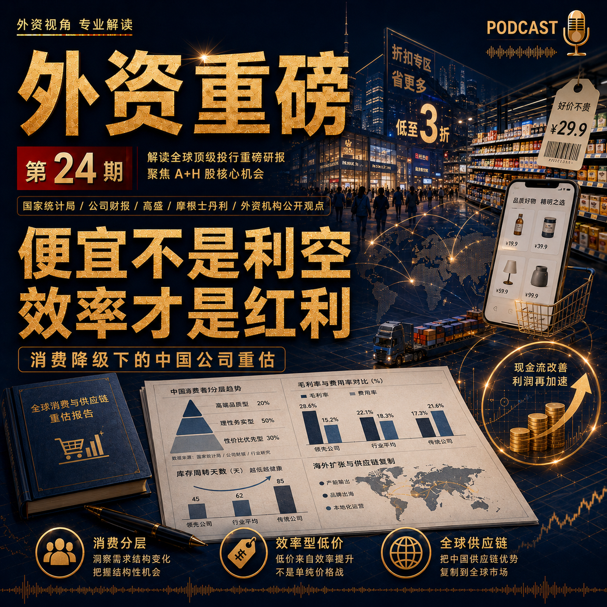
外资重磅第24期｜消费降级不是利空，外资重估“效率型便宜”
消费降级不一定是利空，它更像一场筛选。外资重新看的不是中国消费能不能整体回到过去，而是谁能把低价做成效率、把小额消费做成品牌、把中国供应链复制到全球。
⏱ 20:44 -
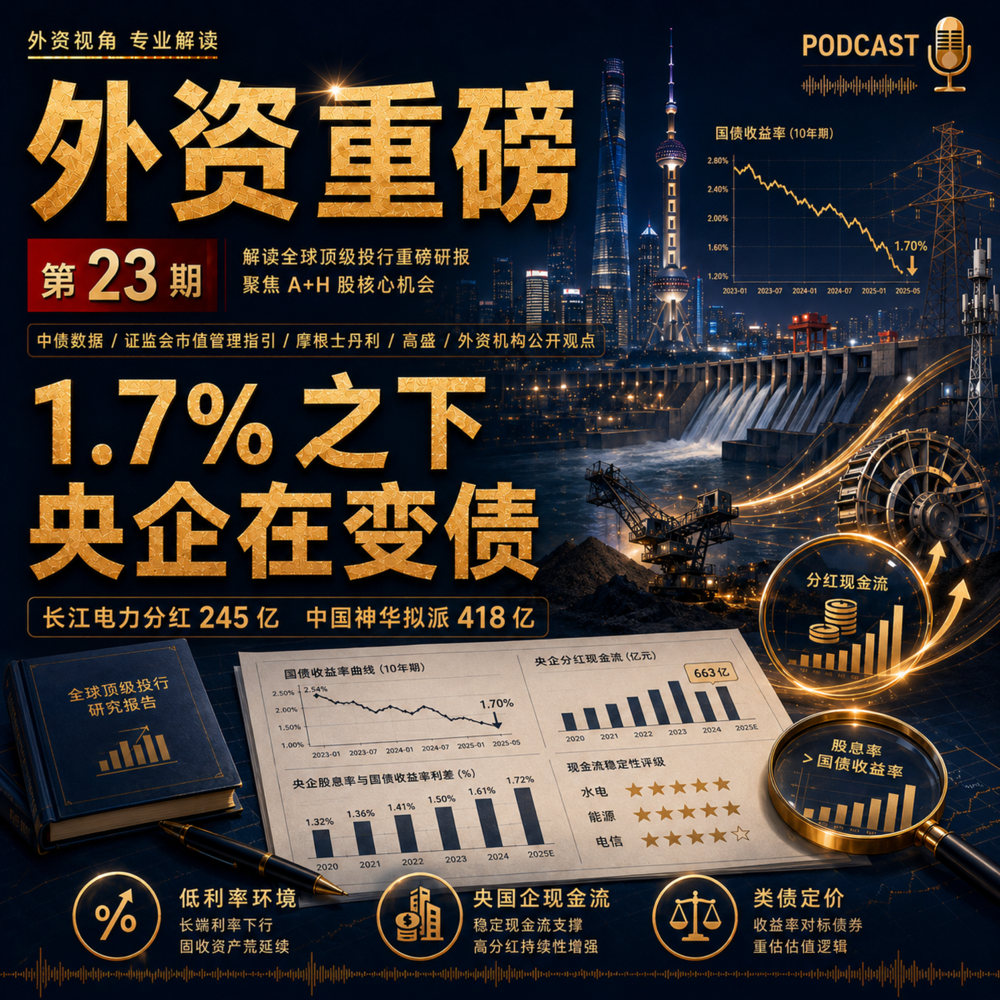
外资重磅第23期｜股息债化：市场为什么重新定价这些慢公司
有一个变化正在悄悄发生：到二零二六年六月初，十年期中国国债收益率还在百分之一点七左右徘徊，而一批长期分红的央国企，每年大致能给出百分之四到百分之六的现金股息率。当这两个数字撞在一起，资金开始换一把尺子看股票——不先问能不能翻倍，而是先问每年能不能稳定分钱、能分多久、比国债多给多少补偿。本期保留三本账。利率账：低利率拉低了所有现金流的折现率，央国企那种"每年差不多多少钱"的稳定分红，第一次被认真当作可以替代部分债券的现金流。公司账：长江电力二零二五年营收约 862 亿元、归母约 345 亿元、发电量约 3072 亿千瓦时，每十股派 10 元、分红比例约 71%；中国神华二零二五年度预计现金分红总额约 418 亿元、占归母净利润约 79%；中国移动、中国电信二零二六年总资本开支虽然计划下降，但钱在往算力网络和智算中心这些有现金流回报的方向挪。定价账：二零二四年证监会发布《上市公司监管指引第10号——市值管理》之后，分红、回购、市值这条链被明确写进央国企的管理目标；外资和长钱在用一个"国债收益率 + 风险补偿 + 久期"的债式框架重新估这批公司。我们也用格力做了对照——高分红、大额回购也很好，但它是制造业现金流，不是公用事业现金流，更接近"高股息"而不是"类债"。边界要讲清楚：高股息不是无风险收益，更不是国债的替代品；只有"长期、可预期、监管有底"的现金分红，才有资格被叫做股息债化。利率反转、行业景气下行、个别公司业绩不达预期、分红比例下调，都可能让逻辑走样。结尾的判断是：当利率维持在一点七到二点零这种区间时，这批"慢公司"会从被忽视的板块，变成机构资金的久期池，但不能把它当成静态的"稳"——它是有久期、有信用风险、也有再定价空间的资产。所有公司仅作代表性资产地图，不构成任何推荐。
⏱ 09:57 -
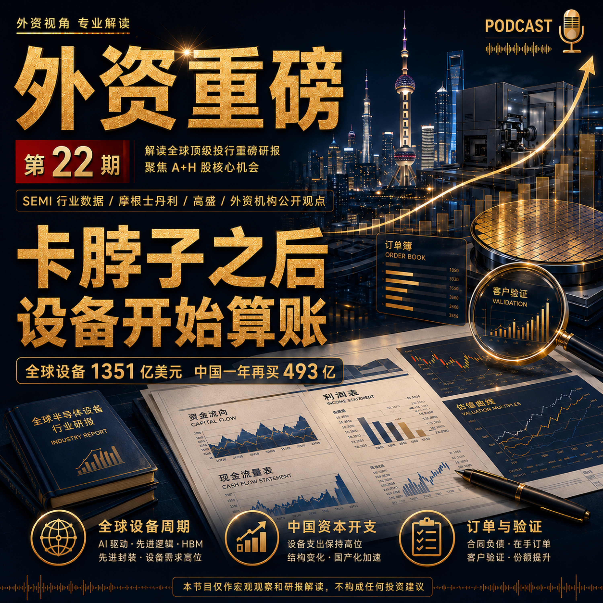
外资重磅第22期｜中微、北方华创、拓荆：外资为什么开始重算半导体设备
有一个板块，过去几年一直被贴着“卡脖子”的标签。但现在外资重新看半导体设备，已经不只是因为国产替代，而是因为一组更现实的数字：二零二五年全球半导体制造设备销售额达到一千三百五十一亿美元、同比增加百分之十五；中国半导体设备支出四百九十三亿美元，大概相当于全球设备支出的三成以上；二零二六年第一季度全球设备出货额继续同比增加百分之十四。核心问题：A 股半导体设备公司，到底还是主题股，还是正在变成有订单、有客户、有份额提升的制造业资产？本期保留三本账：全球账、中国账、公司账。全球账看人工智能资本开支如何拉长设备周期；中国账看中国大陆、中国台湾省、韩国作为全球前三大设备市场，合计占全球市场百分之七十九；公司账则用财报数字拆北方华创、中微公司、拓荆科技、盛美上海、长川科技和芯源微。北方华创收入过三百九十亿元但利润小幅下降，说明平台龙头要看利润质量；中微公司刻蚀设备收入接近百亿元，锚点在刻蚀验证和客户黏性；拓荆科技薄膜沉积设备收入高增，代表验证放量；盛美上海开始带一点全球供应商味道；长川科技体现测试设备利润弹性；芯源微则提醒市场不能闭眼买赛道。这轮重估不是从“卡脖子”到“国产替代”，而是从“国产替代”到“财报兑现”。后面看三个信号：晶圆厂资本开支，设备公司的合同负债、存货和在手订单，以及客户验证。结尾判断是：中国半导体设备公司能不能从“被限制后的替代品”，变成“被客户反复验证后的供应商”；如果答案只是前者，它还是主题股，如果答案走向后者，它才可能被重新按订单、现金流和全球份额定价。所有公司仅作代表性资产地图，不构成推荐。
⏱ 10:21 -
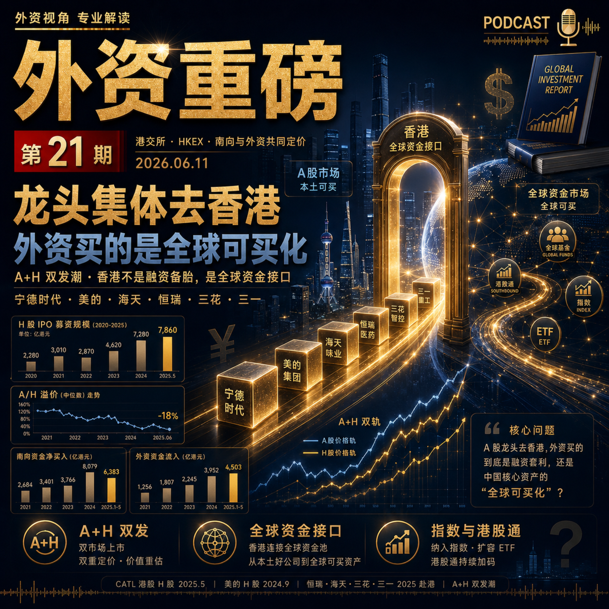
外资重磅第21期｜A 股龙头为什么集体去香港：外资买的不是融资，是全球可买化
如果说 ETF 是资金进入 A 股的一道门，那么港股就是中国龙头进入全球资金池的另一道门。越来越多 A 股龙头主动去香港发 H 股——宁德时代（CATL）2025 年 5 月在港交所主板挂牌（代码 3750、全球发售 1.35 亿股、263 港元），美的 2024 年 9 月完成 H 股上市，恒瑞、三花、海天、三一也在 2025 年陆续赴港。核心问题：外资买的到底是融资套利，还是中国核心资产重新接入全球资金池？本期判断——香港不是融资备胎，而是中国龙头的全球可买化接口。外资买 H 股买的是四层（全球可比估值、流动性与退出、指数与被动资金、南向与外资共同定价），落到资产地图五层（港交所、中资投行券商、已上市 H 股龙头、待评估龙头、港股整体流动性）。这也是一场压力测试，后面看三个信号：新股一到三个月的成交与折溢价、指数纳入与港股通进展、下一批赴港龙头的质量。承接第 20 期"资金入口"主线，从 ETF 入口切到港股上市入口；所有公司仅作代表性资产地图，不构成推荐。
⏱ 10:22 -
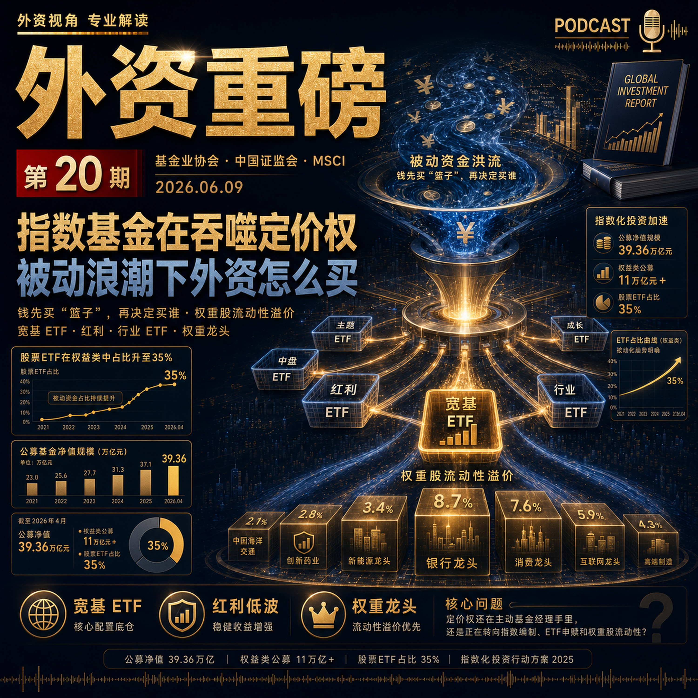
外资重磅第20期｜指数基金正在吞噬 A 股定价权：被动化浪潮下外资怎么买
越来越多进 A 股的钱不再先研究公司，而是先买指数——先买一个"篮子"，再由指数权重决定钱最终落到哪些公司身上。指数正从"市场温度计"变成"资金分配器"。核心问题：定价权还在主动基金经理手里，还是正在转向指数编制、ETF 申赎和权重股流动性？背景数据（带月份和发布主体）：基金业协会 2026 年 4 月数据显示公募基金净值合计 39.36 万亿元；"数说基金2025"提到 2025 年权益类公募超 11 万亿元、股票 ETF 在权益类中占比升至 35%；证监会 2025 年 1 月印发《促进资本市场指数化投资高质量发展行动方案》。本期讲三件事：为什么是现在、它怎么改定价（权重股流动性溢价、越强越买的正反馈、指数编制成为新估值变量）、资产地图五层（宽基 ETF、红利低波、行业 ETF、权重龙头、卖工具的人）。最后落到争议——被动资金是稳定器还是放大器，以及三个更慢的观察信号。所有指数、ETF 与公司仅作代表性资产地图，不构成推荐。
⏱ 09:22 -
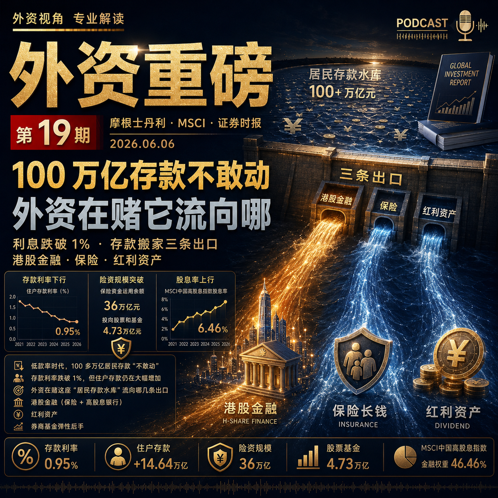
外资重磅第19期｜100万亿存款不敢动：利息跌破1%，外资在赌它流向哪
低利率时代，居民存款成了一座"水库"：2025 年人民币存款增加 26.41 万亿、住户存款增加 14.64 万亿，住户贷款却只增加 4417 亿；存款利率跌破 1%（中行一年期 0.95%、五年期 1.30%），利息越低越爱存钱。这期讲外资在赌这笔钱流向哪几条出口——第一站是理财/货基/储蓄险等"存款替代品"；最值得重视的是保险（36 万亿险资、投向股票基金 4.73 万亿、同比 +25%，是资金中转站）；外资最容易落脚的是港股金融，MSCI 中国高股息指数（截至 2026/5/29）金融权重达 46.46%，前十大含建行 H、工行 H、平安 H、招行 H、人保财险 H。全片七段：存款替代品、居民为什么买保险、外资为什么押港股金融、银行是底仓（净息差 1.43%）、红利资产三看、券商基金弹性后手、一句话清单。结论：先看港股金融尤其保险和高股息银行，再看红利资产，最后看券商基金弹性。
⏱ 12:48 -
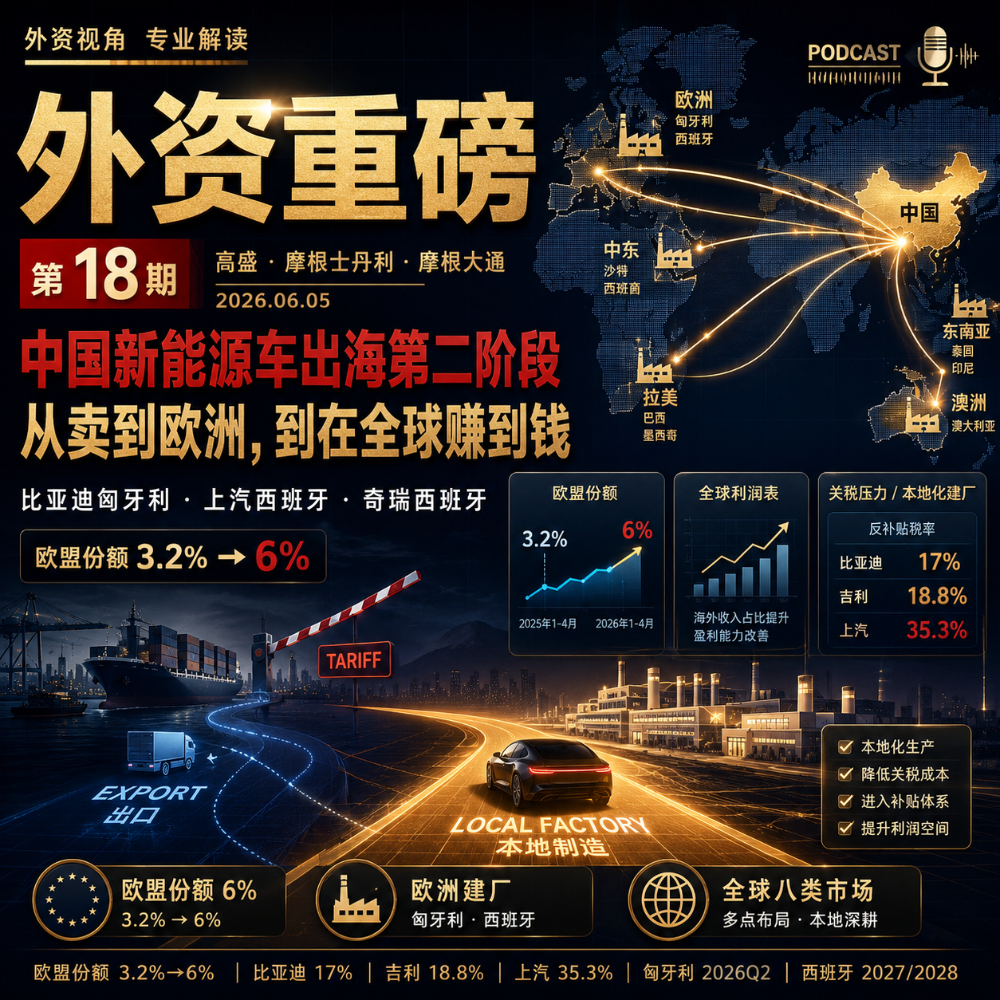
外资重磅第18期｜中国新能源车出海第二阶段：从卖到欧洲，到在全球赚到钱
这期把"中国新能源车出海"从单一欧洲叙事，升级成全球分层竞争。欧盟反补贴税从 2024 年 10 月底正式适用，比亚迪 17.0%、吉利 18.8%、上汽 35.3%，叠加原有 10% 进口关税；但 2026 年 1–4 月中国品牌在欧盟新车份额从去年同期 3.2% 翻倍到约 6%，广义欧洲口径从 3.7% 升至 7.3%。本期分九段：欧洲关税锚点、欧洲三种落地模式（比亚迪匈牙利赛格德自建 / 上汽西班牙加利西亚新建合作 / 奇瑞×日产英国 Sunderland 借用代工）、出海三阶段、普通人四视角、全球八类市场分层（欧洲规则战 / 北美绕行 / 拉美增量 / 东南亚挑战日系基本盘 / 中东高端化 / 澳洲口碑场 / 日韩攻坚 / 非洲长期期权）、五层资产地图（整车看分层、电池看绑定、零部件看跟随、物流看周期、后市场看耐力）+ 看点/风险双句式、三大争论与四个观察信号、结尾估值切换判断。市场以前看销量，现在开始看分地区利润表——下一关不是卖到哪里，而是在哪里能持续赚到钱。
⏱ 26:18 -
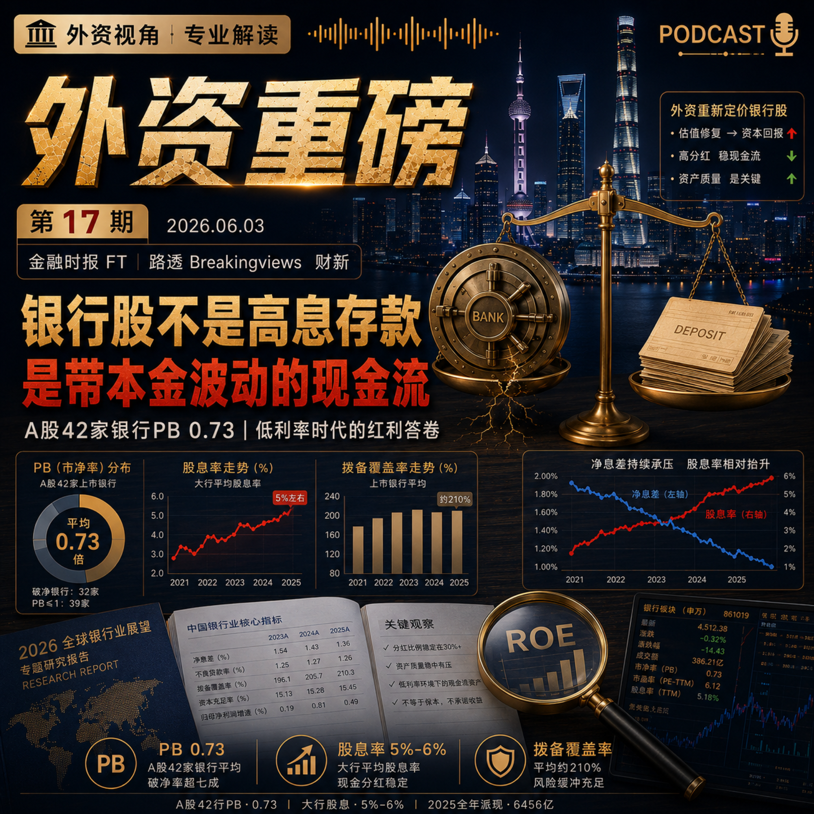
外资重磅第17期｜银行股不是高息存款：低利率时代，外资重算中国银行现金流
当一年期存款利率掉到 1% 多，国有大行股息率到 5%、6%，银行股是不是变成了"高息存款"？2025 年 A 股 42 家上市银行整体 PB 仍低于 1 倍，绝大多数仍破净——农行 PB 回到 1 倍附近、招行接近 1 倍、工建中邮 0.6–0.8、交行更低，中小银行甚至只有 0.3 倍。六大国有行全年分红超 4200 亿，41 家上市银行合计派现约 6456 亿，招商银行全年分红超 500 亿、现金分红比例 35% 以上，部分银行静态股息率超 6%；2025 年 42 只银行股有 35 只上涨，农业银行全年涨幅超过 50%。本期拆成十五节：净资产/PB/PE/拨备/股息率五个最基础概念、银行股 vs 银行理财、为什么长期破净、2025 已经被市场提前定价的风险、国有大行/股份行/城商行/农商行四类银行、宁波 vs 平安、五类买方（含交行社保 121 亿股 / 13.76% 仓位）、房地产五条传导线、美联储四层影响、宏观政策四看、七个指标互相印证、五个进入观察区的信号。最后回到外资视角：中国银行股的特点不是成长性最强，而是估值低、分红高、资产质量风险正在被重新定价。
⏱ 25:53 -
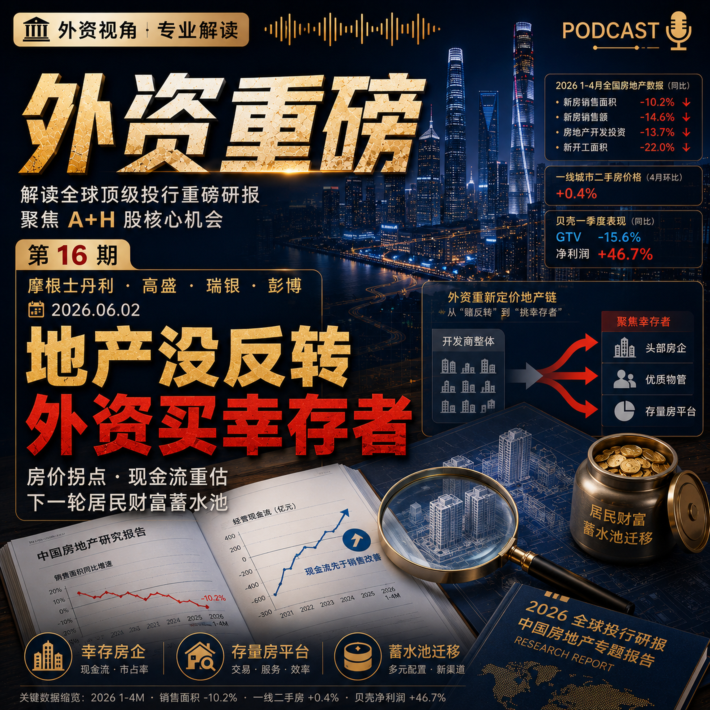
外资重磅第16期｜地产没反转，外资买幸存者：房价拐点、现金流重估与下一轮蓄水池
中国地产并没有全面反转——2026 年前四个月，新建商品房销售面积同比下降 10.2%、销售额下降 14.6%、开发投资下降 13.7%、新开工下降 22.0%；但 4 月一线城市新房价格环比上涨 0.1%、二手房环比上涨 0.4%，局部止跌信号开始出现。本期把"为什么外资重新翻中国地产链财报"拆成八段：三个拐点不会同时来、硬数据 + 一线分化、外资从整体打折切到挑幸存者（中海/华润/龙湖）、物业估值锚切换（中海物业/保利物业/华润万象生活）+ 贝壳一季度 GTV -15.6% 但净利润 +46.7% 的存量房平台逻辑、2027-2031 改善需求、拐点四条线 + 三类买房人、居民财富蓄水池迁移、房企四阶段历史。外资买的不是地产复苏的浪漫想象，而是出清之后的确定性折价。
⏱ 21:44 -
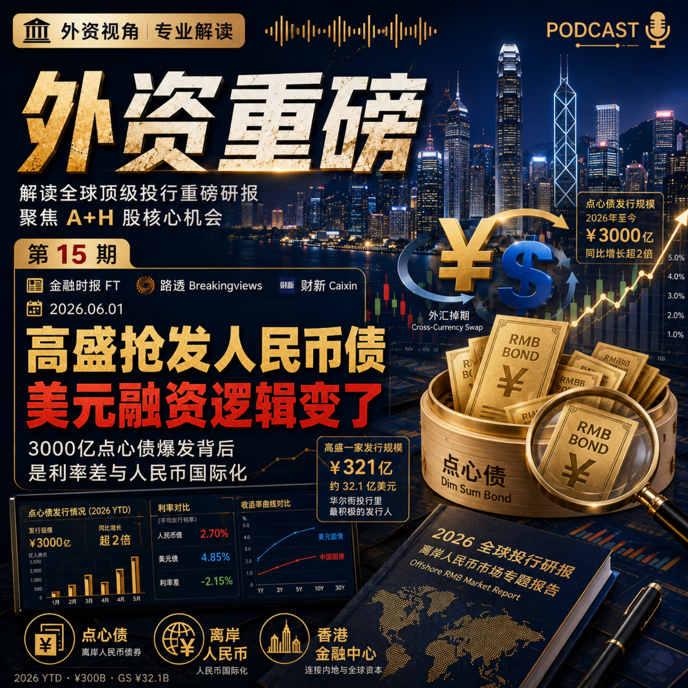
外资重磅第15期｜高盛抢发人民币债：3000亿点心债爆发背后，美元融资逻辑变了
2026 年至今，离岸人民币债（点心债）发行规模约 3000 亿元人民币，超过去年同期两倍；其中美国的银行、华尔街投行群体（以高盛为代表）发行最积极，高盛一家就发行约 321 亿元人民币（约 32.1 亿美元）。本期把这条线拆成六段：点心债是什么、高盛为什么愿意借人民币（利率差约 200bp + 外汇掉期）、今年为什么爆发（3 月单月 157 只、1500 亿、同比+180%）、香港的三层基础设施 + 央行 2000 亿流动资金安排、A 股港股的四类映射资产（港交所、跨境券商、银行、人民币高质量资产）、四个风险。最后回到外资视角：人民币国际化，不一定先发生在宏大的储备货币叙事里，它可能先发生在高盛的融资成本表里。
⏱ 15:53 -
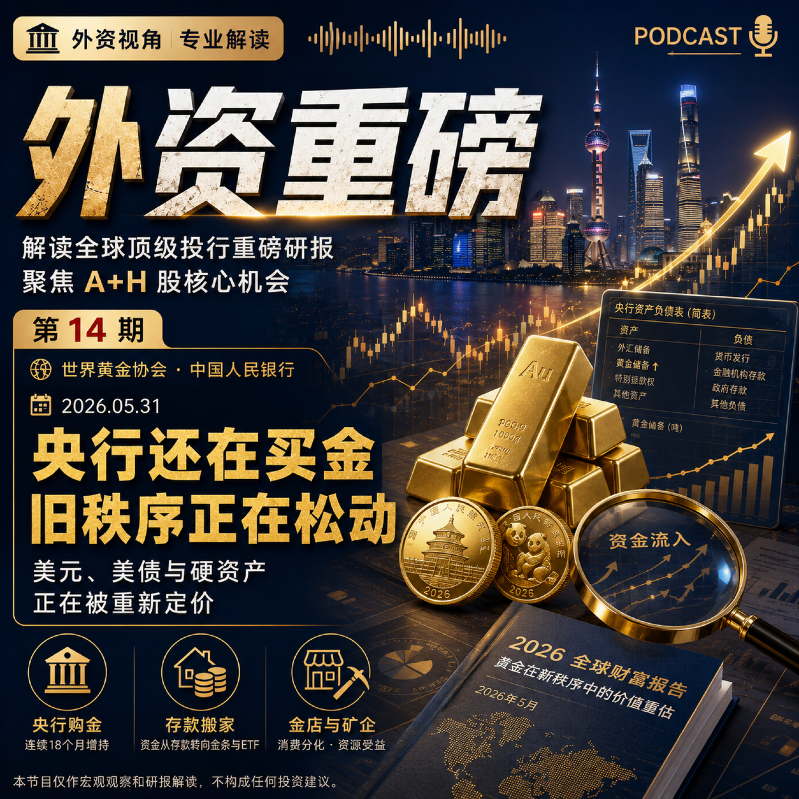
外资重磅第14期｜央行还在买金：美元、美债与硬资产的旧秩序正在松动？
截至 2026 年 4 月末，中国央行黄金储备升至 7464 万盎司，连续第 18 个月增持；同期存款利率降到 1% 以下，居民资金从存款转向金条与黄金 ETF。本期把黄金这条线彻底拆开：央行买金背后的布雷顿森林体系与美元信用、个人买金的风险与五条规避建议、黄金 ETF 与白银铜能源 ETF 的本质区别、金店股的分化（周大福 vs 老铺黄金）、黄金矿企的资源弹性（紫金、山东黄金、中金黄金、赤峰黄金），以及外资为什么从"信用扩张"转向"真实供给"重新看重硬资产。
⏱ 20:05 -
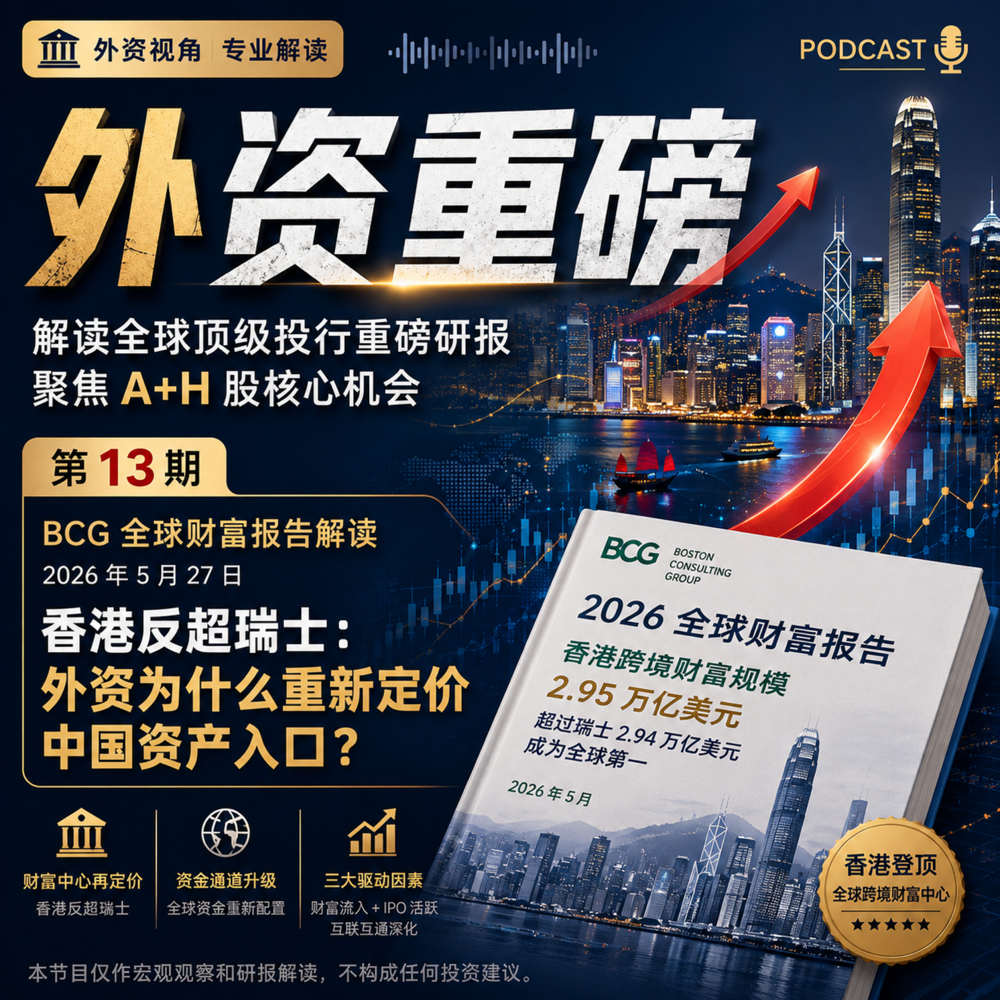
外资重磅第13期｜香港反超瑞士：外资为什么重新定价中国资产入口？
据路透社转述 BCG 2026 全球财富报告，香港以约 2.95 万亿美元跨境财富规模反超瑞士 2.94 万亿美元，重新成为全球最大跨境财富预订中心。本期拆三层：香港为什么被放回牌桌中央（财富全球配置 + IPO 修复 + 外资亚洲议题）；资产落点（港交所、汇丰渣打中银香港、中金华泰国泰海通、友邦保诚）；中国资产入口价值的重估（创新药、AI 机器人、消费出海泡泡玛特名创优品安踏海底捞）。三个跟踪信号：成交额与南向、IPO 质量、财富规模能否变成金融机构收入。
⏱ 10:32 -
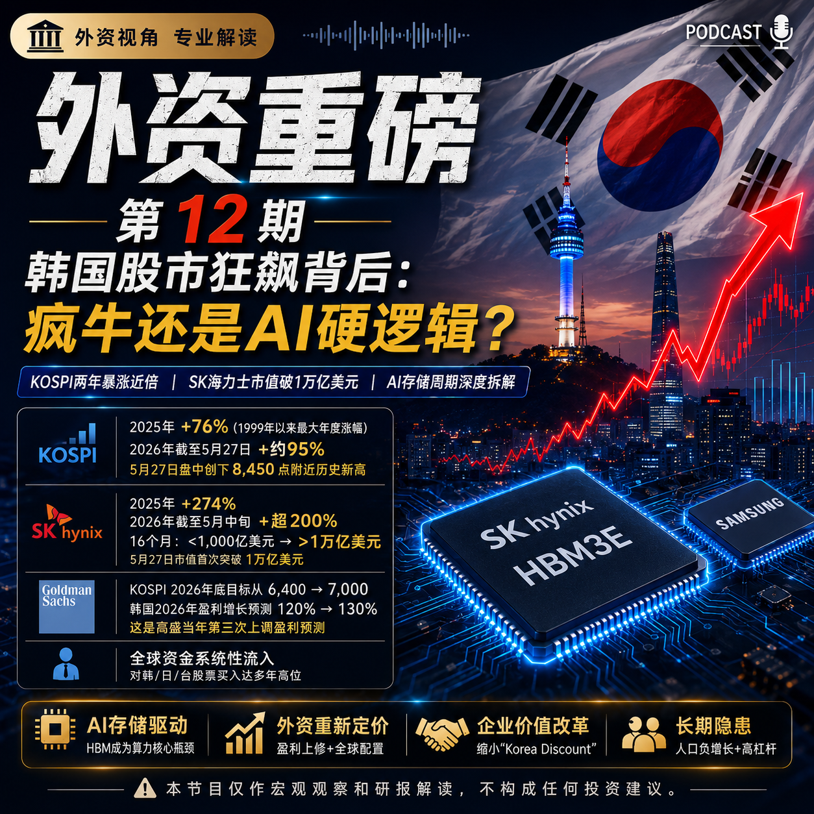
外资重磅第12期｜韩国股市疯牛还是产业周期？——KOSPI、SK海力士与长期结构隐患
韩国有全球最低的生育率，高企的家庭债务，但KOSPI这两年跑出了全球主要市场里最夸张的一轮行情。据Reuters报道，KOSPI 2025年上涨约76%（1999年以来最大年度涨幅），2026年5月27日盘中最高约8450点，年内接近翻倍。SK海力士16个月从不到1000亿美元市值攀升至突破1万亿美元。本期拆解三条外资定价逻辑：AI和HBM盈利持续上修、Corporate Value-up改革、全球资金寻找亚洲AI替代品。判断框架：短期看HBM，中期看Value-up，长期看人口和资产负债表。
⏱ 12:17 -
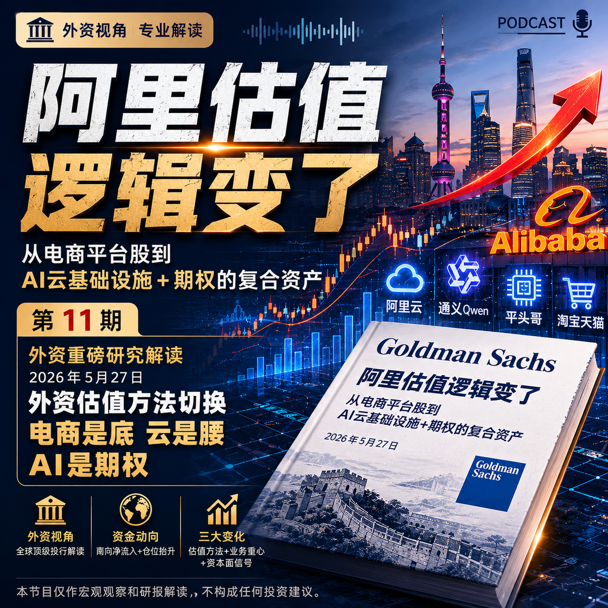
外资重磅第11期｜外资为什么开始重新给阿里估值？——电商现金流 + 云基础设施 + AI 期权
外资问阿里的问题变了——从"淘宝能不能打赢拼多多"切换到"阿里云 AI 收入占比、3800 亿 capex 兑现、Qwen 能不能成为企业云入口"。本期重构阿里估值方法：从市盈率切到三层 SOTP（电商现金流 + 阿里云 + AI 期权），并横向比对腾讯、京东、美团、百度、拼多多、字节。
⏱ 11:54 -
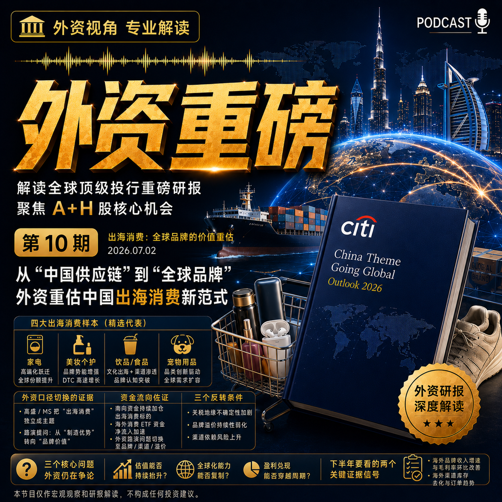
外资重磅第10期｜外资为什么开始追"中国软实力出海"？
外资对中国消费的口径，从"内需走弱、估值打折"切换到"中国品牌全球化、用全球品牌溢价定价"。本期讨论 Pop Mart、Mixue、Anker、名创优品四个样本，以及和上一轮家电/手机出海的差异。
⏱ 08:09 -
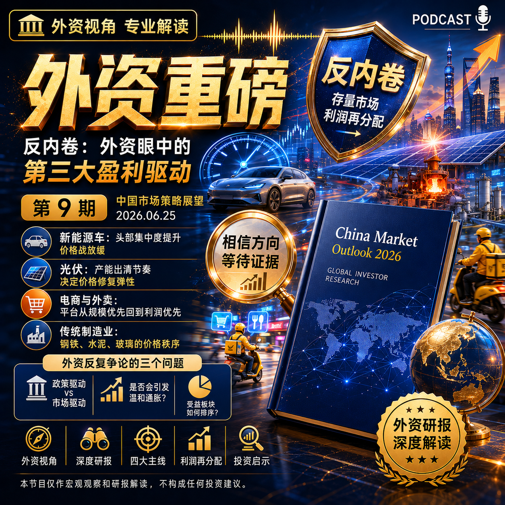
外资重磅第9期｜反内卷能不能从政策语言变成利润语言？
反内卷被外资视为继出海、人工智能之后的第三大盈利驱动。本期讨论新能源车、光伏、电商外卖、传统制造业四条主线，以及外资从政策语言到利润语言所等待的三个信号。
⏱ 10:48 -
外资重磅第8期｜Pfizer 为什么愿意付 12.5 亿美元买中国药？
2025年5月，辉瑞以12.5亿美元预付款获得三生制药SSGJ-707全球权益（中国除外），潜在总额超60亿美元。2026年一季度中国biotech出授权继续放量。本期讨论外资如何给中国创新药定价，以及这个价格有没有进入A/H股创新药板块。
⏱ 16:25 -
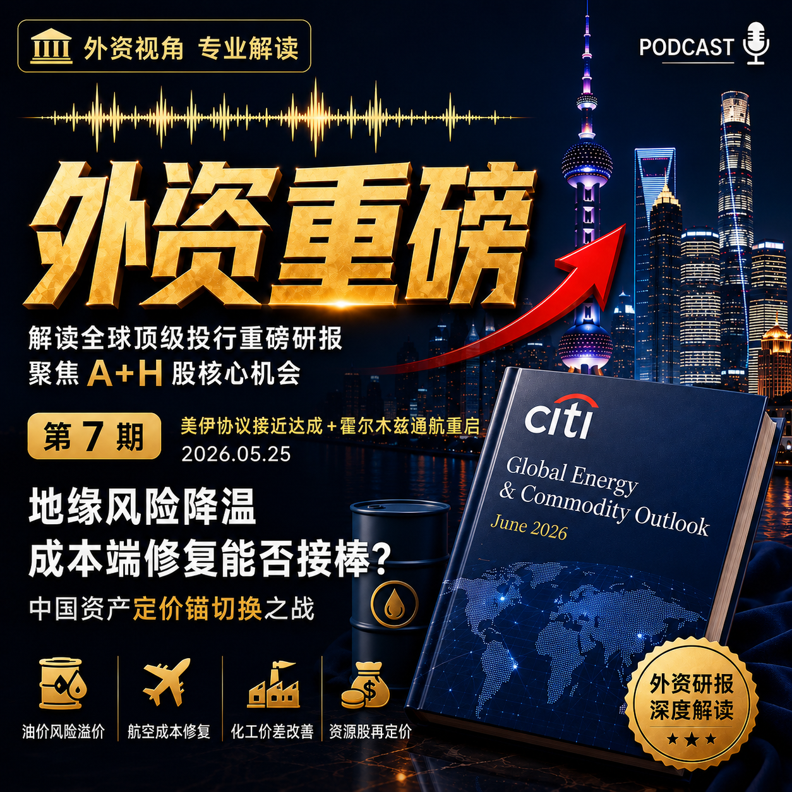
外资重磅第7期｜霍尔木兹重启：外资定价锚从资源股切到成本修复？
美伊协议接近达成，霍尔木兹逐步恢复通航。油价风险溢价退潮之后，外资会不会把中国资产的定价锚，从资源股受益切换到成本端修复？航空、化工中下游成本端修复 vs 上游油气地缘溢价重评，市场即将重新排序。
⏱ 11:29 -
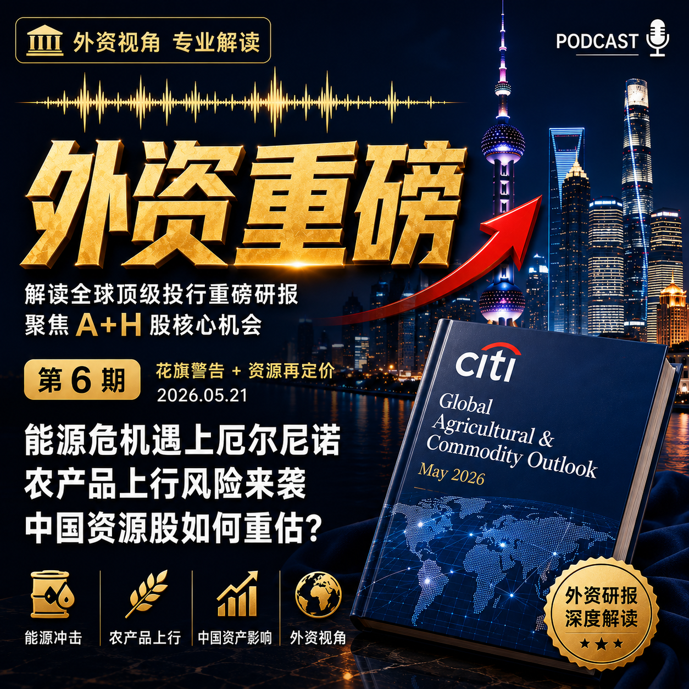
花旗警告资源再定价：能源危机、厄尔尼诺与中国资源股
据公开财经媒体转述，花旗近期警示全球农产品价格未来6到12个月风险"严重偏向上行"。霍尔木兹海峡、OPEC+供给和厄尔尼诺三重变量叠加，全球资源供给端正在收紧。本期拆解输入性通胀、中国资源股重估与外资配置逻辑。
⏱ 10:55 -
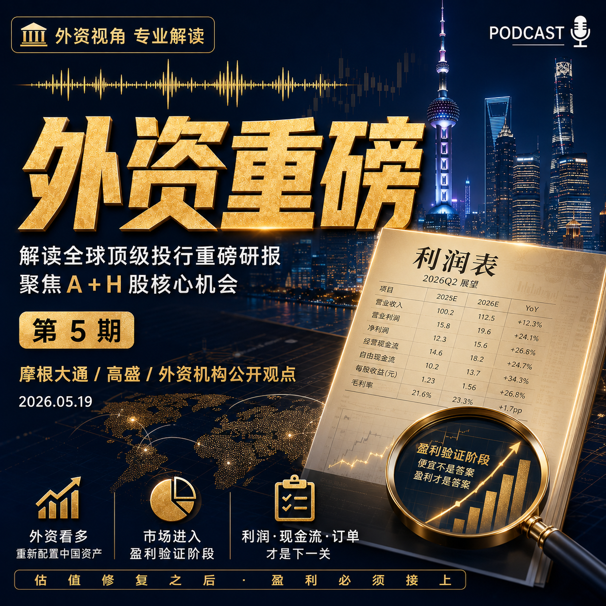
外资重新看多中国资产：便宜不是答案，盈利才是答案
外资对中国资产的态度正在改善，但市场没有给出一条直线上涨的答案。恒生科技、沪深三百回落，科创五十相对走强，说明资金正在从"买便宜"转向"看盈利"。本期拆解外资重新定价中国资产背后的盈利验证逻辑。
⏱ 12:22 -
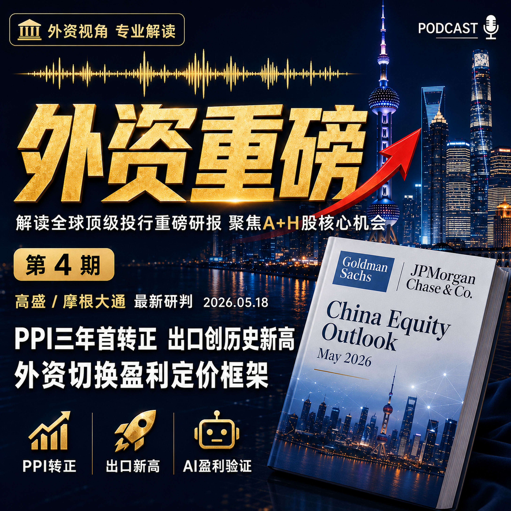
出口爆表、PPI三年首转正：外资要用这组数据验收什么？
4月出口同比+14.1%创历史单月新高，进口同比+25.3%；PPI时隔近三年重回正值，宏观基本面改善信号全面超预期。恒生科技5000点拉锯，科创50高位震荡，韩国KOSPI年内涨75%后遭监管降温。本期梳理高盛、摩根大通框架：外资定价逻辑已从"估值驱动"切换至"盈利驱动"。
⏱ 08:30 -
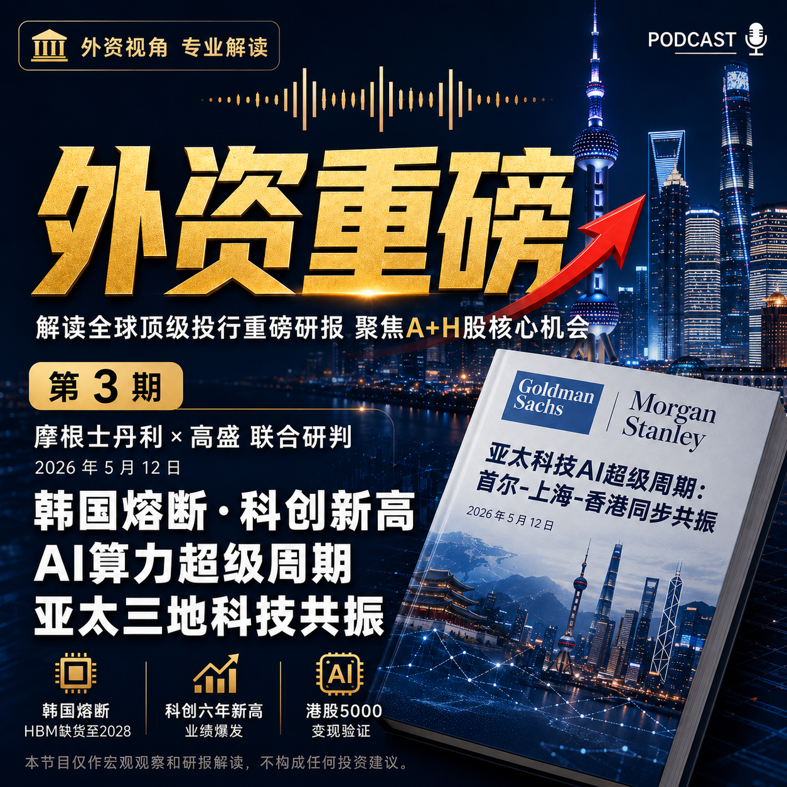
韩国熔断、科创六年新高、港股爆发：AI算力超级周期如何同步引爆亚太三地科技股？
KOSPI 年内暴涨 86% 触发熔断，三星市值首破万亿美元，HBM 缺货至 2028；科创板六年新高，多家半导体公司 Q1 净利暴增逾 6000%；港股科技重返 5000 点，摩根士丹利预测 12.5 亿美元被动买盘入场。三地共振，同一条 AI 算力供应链。
⏱ 07:05 -
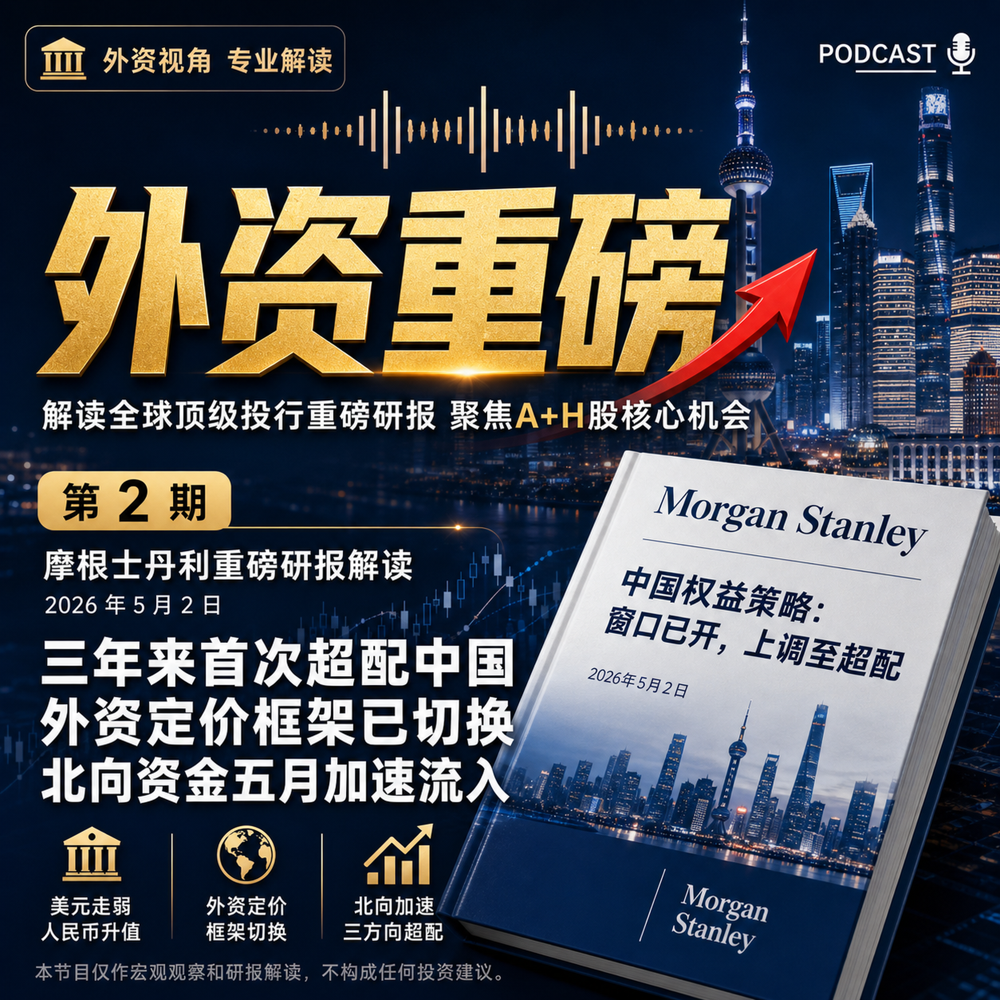
摩根士丹利三年来首次超配中国：五月北向加速，外资定价框架已切换
解读摩根士丹利 2026 年 5 月 2 日中国权益策略报告。三年来首次上调至超配：美元回落与人民币升值提供外部缓冲，4 月 PMI 内需驱动改善，外资定价框架从地缘折价切换至政策窗口期。梳理大金融、港股科技、新质生产力三条配置思路。
⏱ 07:50 -
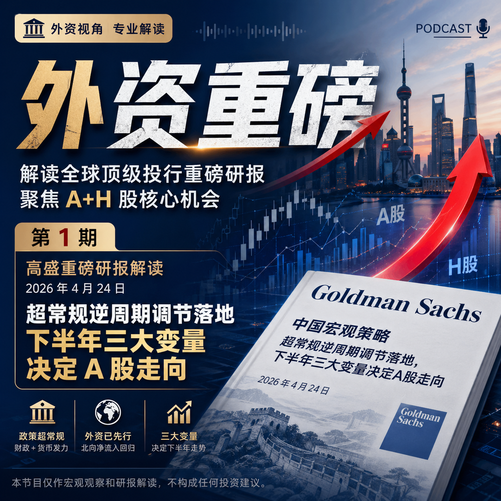
高盛重磅解读：政治局定调之后，A 股下半年真正要看什么？
解读高盛 2026 年 4 月 24 日中国宏观策略报告。"超常规逆周期调节"定调之后，财政、货币、汇率三条线同步发力。梳理特别国债落地节奏、降准降息窗口、北向资金回流三大主线，以及大金融、基建链、新质生产力的配置逻辑。
⏱ 09:10